Hi I'm max,
a Master in Design for Emergent Futures student at the Institute for advanced Architecture of Catalonia. On this website, i will document my journey throughout the MDEF program.
As an overview of what i'm interested in, you can take a look at my design space.
In the first week, the main objective was to get to know the faculty, our co-students, and the area around IAAC.
To become familiar with the faculty, Guillem talked a lot about MDEF, the FabLab here as well as FabLabs all over the world, and projects of all sorts. Also, we got an overview of all the workshop areas the IAAC has to offer: 3D printing, CNC milling, laser cutting, woodworking, electronics, and robot arms, to name a few.
We were also welcomed with a spontaneous visit by Nadya Peek, who gave a presentation about “Making machines that make,” with a strong emphasis on concepts like open-source frameworks and democratizing access to digital fabrication, to immediately inspire us with awe and creativity.


In order to achieve the second goal, we had to bring some pictures of objects, a community, a background and a “more-than-human” aspect that influenced our live in some way and tell a few stories along those pictures.
Also we went out for some drinks.
Then, for the last objective, we took a leisurely stroll around Poblenou, visiting community workshops, community gardens, and community spaces for art & culture.
I don’t think I have ever seen so much community engagement in a single place.


A design space is a continuously updated mind-map to keep track of, organize and connect different topics that interest us within our design practice. The first draft of our own design spaces we made from pictures of several different objects, materials, reference projects, contexts and methodologies that interested us. By ourselves and in groups we found connections between the different topics.


Later, we extended, digitalized and added more items to our design spaces. A current version of my design space is live at the top of the page.
For me, the design space was probably the most helpful exercise that we have done up to this point. In the beginning it took me a while to understand what it was supposed to look like, so i struggled finding pictures at first, but i am very happy with the result.

The Atlas of Weak Signals is a toolkit designed by Mariana Quintero, transforming the research of weak signals into a practical space to navigate and understand possible emerging scenarios based on underlying trends in our current world.
After familiarizing ourselves with the cards, playing a (pretty chaotic) round and adding some of the cards to our design spaces to integrate possible upcoming trends and areas of opportunity, we were tasked with contributing a weak signal by oursleves:
Thanks to the advancement of understanding in neuroscience, we know that thoughts and ideas change the biochemistry of our brains. Given this, future generations might learn to alter their habits and behaviour by performing mental exercises, or capabilities like conscious control over nervous system and body temperature will develop and become widespread.
Another way of understanding this could be a direct interface between the mind and the internet or any other sort of computer.

Reflection 1
The first weeks at MDEF have already been a diverse, challenging, and perspective-broadening experience in many regards.
First of all, I am thoroughly happy with the people at the whole IAAC faculty. When I decided to come here, I imagined IAAC to be a place where people with open minds, a vision for a better future, and great technical skill come together, and I have not been disappointed. Additionally, my classmates at MDEF are much more than I could have hoped for, and I am excited to see what projects we are going to do together.
The first two weeks of classes at MDEF offered very new ways of thinking about design for me. The design space method helped me visualize, organize, and interconnect different fields of interest within my practice, and I have started to enjoy it as a complementary tool that will be changed and expanded alongside to reflect my own changes and developments throughout my education.
The number of communities and projects connected to IAAC was overwhelming at first, but I am excited to see what opportunities will arise from that during the program.
During these first weeks, we have had many introductory classes on hardware, electronics, and coding. Since this is probably the sub-field of design where I have the most experience, these classes are not too challenging for me, but I still feel like I can learn a lot. I have done some hardware hacking in the past, but never to the extent where I had a whole disused high-tech SLA printer to disassemble and then invent an entirely different functionality for the technical components. This is an awesome opportunity, and I am grateful to be able to participate in classes like these.

In class, we had to craft a quick prototype. We were supposed to take a past project from one of our classmates and then try to make a prototype around that topic.
Bélen had a project where she experimented with a fabric that could generate electricity when it was warm on one side and cold on the other.
In turn, I wanted to experiment with a way to wear this fabric in an unrestrictive fashion so that it could be worn over clothing and on different parts of the body.
I did my first 1PP intervention to figure out how much water I used in a day. It was a fun and interesting experience, and a good reason to finally buy a Tripod.
I learned that I used almost 77 liters on that friday which is a lot, but I think it must still be a lower than average day, since I didn't clean a lot of dishes nor did I do laundry.
Reflection 2
The last two weeks of MDEF felt very intense and a lot more draining than the first two. Maybe that’s just because I was a little sick, and it was hard for me to keep up.
Nevertheless, the design intervention was an interesting thing to do, and I want to see which other questions can be answered in this fashion. I am not entirely sure how scientifically useful I consider the information gathered in this way, but I can’t deny that I like the honesty of answering questions by taking action.
I very much liked the other content we were working with during these last two weeks. The Living with Your Own Ideas workshop was not what I expected, but I think it opened a new field of interest for me that I had not been aware of yet. I consider myself to be an open-minded person, but some of the ideas we were presented with are more profound, speculative, and progressive than anything I have encountered up until this point.
The Companion Species Manifesto, for example, presents a way of thinking about interspecies relations
that is entirely new to me, but it resonates deeply, and I am eager to read some of the book recommendations I received this week.
At first, it was hard for me to engage in the prosthesis we prototyped during the week. In the past, I needed a clear idea of what I wanted to achieve by building a prototype. The different prostheses we built during Living with Your Own Ideas had the goal of building something to experiment with the notion of self, encouraging a shift in one’s own perspective. I quite enjoyed this after I got over my initial difficulties.

Collective design space
To start our getting together in groups for a bigger intervention, we composed a huge design space on the wall of our classroom, trying to connect several of the core interests and topics each of us have contributed. This was interesting and fun, but also pretty overwhelming.
Starting out from something as broad and abstract like our collective design space - that included all the major and a multitude of minor topics of interest to the MDEF course - was very helpful to make connections between the topics of interests of different students, but it also made it pretty difficult to boil something down into small actionable steps.
In smaller groups formed by the connections of interests on the big collective design space, we assembled another, smaller collective design space. This felt pretty chaotic and some of the reasons could be that we are inexperienced with making design spaces, especially collective ones, and in the future it might help to stick more to the basic variety of nodes that belong on a design space: Objects, Materials, Projects, Methodologies / Technologies, Contexts and Experiments that represent or otherwise relate to an Issue that we are interested in, more than just plugging thoughts on post its.
In any case, it remained difficult to get within an actionable scope to do something that can actually be done in so little time, while still teaching us something meaningful, and by the time we arrived at that conclusion, we had even less time left.

So my second total and first group intervention ended up being about long-termism. Lucretias phone is 5 years old and the battery as well as the charging are not the best anymore. However, this phone has an inductive charging interface, so we thought we could use a solar panel to maintain some more battery during the day, as well as use the inductive charger to make the charging process itself less tedious.
From that, we started to think more about our daily usage of our phone batteries. How could we change our habits in regard to our energy consumption on the phone? In earlier times when phones weren’t as good, it was a very normal practice to turn off wifi, bluetooth and mobile data respectively when they weren’t being used. Would there be a noticeable difference if we used less services on our phones that consume a lot of energy? What are the most energy consuming applications on a phone anyway? Luckily this can quickly be answered by looking at statistics recorded on iOS: What seems to consistently consume the most energy for me were instagram, audible and WhatsApp.
To inquire if we could make a noticeable difference by a change of habit, I started using my phone in battery save mode and on minimum brightness, turned my network services on only when i needed them, and also reduced my time on instagram.
The difference was a lot bigger than i expected it to be. With this routine, I could easily use my phone without charging for two days instead of only one, which effectively doubles the lifespan of my phones battery, because I only use half the charging cycles.
I am surprised at the result eventhough I feel it seems pretty obvious, sometimes action and consequence seem removed from eachother even if they are clearly not. I will continue to use these small adjustments, since it feels like no big deal at all to change them and the result seems disproportionately beneficial.
Reflection 3
I think these weeks I started to feel the MDEF characteristic “lostness” that some of the people around me talked about. The intervention we did during the last two weeks was interesting enough, but it also took us some time to finally decide on the topic. It appeared to be quite difficult at first to find a course of action that we all felt comfortable with and that was sufficiently interesting to all of us. It ended up being very specific: about what actions we could take to make our phone batteries last longer.
While this is a topic that seems to be very well aligned with questions from my design space, and I feel like we explored a good range of different approaches—from just changing our own habits to using the phones for more energy-intensive tasks less, to building a little portable solar-powered phone charger—it felt like something was missing.
When I did my intervention on water consumption, I felt very comfortable tackling a small and specific topic.
In the second intervention now, we worked as a bigger group while our focus felt even more specific, which left me questioning how what I am doing fits in with the general direction of my practice. This problem, of course, is probably very closely related to me, in fact, having no idea where to go with my project at this moment.
At this time of the course, I still feel very much like I am being stuffed with a multitude of problems, facts, technologies, and philosophies. A lot of these are very fascinating to me, and I can see myself incorporating them into my practice, but I cannot keep up with processing them all, drawing connections as well as I would like to, and assembling a sort of framework to make my interests work towards a common goal.
The third intervention was, and actually still is, a lot of fun and very interesting to me. I finally got around to making a project with mycelium, which I had wanted to do since the start of MDEF.
Just as in the last group intervention, we struggled to find a group, a topic, or a course of actionable steps, and by the time we were all satisfied with our plan, the first week had already passed. In the second week, we started growing mycelium on different substrates: coffee grounds, cardboard, textile, and sawdust, which are all organic waste materials we produce in our daily lives. The basic idea was to make the mycelium grow throughout the substrate, gluing it together and enabling us to recycle discarded material scraps into a new solid shape.
To gather some data on the growth of the mycelium and to give us additional information to compare the different substrates, we wanted to hook the growing chambers up with some sensors. Since the outside temperature is going to be about the same for all the different substrates, we wanted to see if there would be
differences in the temperature caused by the mycelium growing in the different substrates. We also wanted to monitor the humidity of the growing chambers as well as the electrical resistance of the substrate to see how it changes as the mycelium grows.
Unfortunately, our mycelia were all contaminated by mold, so we got new, clean spawn grain and will try the same process again next week.
Reflection 4
So, my last two weeks were full of very new experiences. Not only did Laura further our education in IAAC philosophy and introduce us to some art collectives around Barcelona who are doing some very cool things, but Jana also had a very helpful insight for me as well: from now on, I will be treating my interventions as explorations of different ideas that can contribute to or benefit the exploration of my umbrella topic, communal living. This feels natural to me since I have thought about living in some communal way in the future and because of the unconsciously central placement of this idea in my design space. This allows me to frame my many different fields of interest within this larger topic and focus them through an overarching context, emerging from their connections.
This feels natural to me since I have thought about living in some communal way in the future and because of the unconsciously central placement of this idea in my design space. This allows me to frame many different interests within this larger topic and enables me to ask many questions that I find very interesting: How could different kinds of sustainable materials be cultivated inside a commune, and how could they be used to build different things? How much energy, water, and trash would such a community need to manage, and what would be the best ways to do so? Which philosophies and ways of co-living should or could be applied in such a commune, and how would they look in day-to-day life?
This framework allows me to work with my classmates who are interested in similar topics but for different reasons or in different contexts. For the intervention over the last two weeks, I worked with biomaterials for the first time, together with Andrea, Bel, Kevin, and Vitti. We used four different substrates that we generate as waste: wood scraps or sawdust, coffee grounds, cardboard, and fabric to grow mycelium.
The idea was to figure out how well the mycelium would grow on different substrates and whether it would bind them together well enough to form a new shape that could be useful in a different way, effectively recycling waste material. We also wanted to hook up the growing mycelium with temperature, humidity, and galvanic sensors to gather information about their growth, enabling us to better compare the growth across different substrates.
Even though we didn’t quite finish the intervention (mycelium takes a long time to grow, our samples got contaminated, and figuring out a way to measure the conductivity of mycelium took some time), I am very happy with the direction of this exploration. This is especially true because I finally experimented with something completely new to me, which has been a goal since the start.
For the design dialogues, we will now focus on getting uncontaminated batches of mycelium to grow, hooking them up with sensors, and getting them ready for the design dialogue.


The Machine Paradox workshop consisted of two intense weeks with our noses deep in electronics. In the first week, we disassembled, cataloged, and examined the internal workings of a discarded electronic device. In the second week, we reassembled the parts into a “Paradox machine” to give them a new life.
We started out by cleaning the dust off some items from a container full of discarded electronic machines.
Afterwards, we got together in groups, each group receiving one the scrapped devices. I worked together with Bélen, Flavio, Andrea and Ramon, and we decided to give our attentions to the beautiful Formlabs Form 1 SLA Printer.
To see a detailed documentation of our teardown and quest to examine and control the individual parts that make up the printer, you can take a look at the forensic report we wrote on the topic.


The second week we spent on assembling a useless machine. The goal was to use parts of the basic structure of the Formlabs, including the mechanism that detects when the cover is open for safety reasons, to make a machine that “parties” with itself while it is closed, but when it detects it was being opened, it would shut down, not allowing meagre humans to take part in its fun activities.
We couldn’t use the Barduino board, because the sensitive Galvo motors would react to the frequency of the PWM pulses and flicker about. Instead, we ended up with an Adafruit Feather ESP32-S3, which sports two Digital to Analog Converters (DAC).

The connector cables we accessed on the Galvo driver board have a Ground, Power and Signal Wire. With the DAC connected to the Signal wire of the Galvo board, we could control the position of the lasers on one quarter of the available space on the printer. Connecting the power of each of the Galvo controls shifts the lasers origin by 50% on the axis of the pertaining Galvo motor. In this fashion, all four quarters of the printing space can be reached with the laser by using the 4 combinations of powering or not powering the controls for each Galvo motor.
To center the laser as good as possible on the disco ball to achieve more reflections, we connected the power power wires through potentiometers. They regulate the voltage going to the Galvo driver board, allowing us to manually adjust the origin of the laser to an area directly under the disco ball.
In order to produce a continuous pattern that shoots the laser at different points at the discoball, we utilized a lissajous curve motion. For this we used code by pyeseul from p5.js.
The Reed Sensor inside the printer that detected wether the cover is closed or not seemed to work at first, but it gave out eventually, so we ended up replacing it with a Hall Sensor.
Controlling the Stepper with an H-Bridge to move the disco ball up and down to shake it a bit was fairly straight forward.
We couldn’t figure out how to communicate with the OLED screen that was built into the Form 1, so we substituted it for a simple LCD screen that was sufficient to display our two different messages depending on the state of the Printer: “party in progress…” for when the printer is closed, and “no humans allowed” for when it is open.
Here you can take a look at our final presentation of the project.
This workshop was a pretty intense experience. Taking apart a high-tec machine like the Formlabs has to be exciting of course, but using most of its parts to build another completely different machine was something I have never done before and enjoyed a lot.
The experience wasn’t only great because of the workshop concept, but also because of my classmates and teachers. Inside of my team, I felt that we were all eager to experiment and understand, motivated and most of the time we managed to share the work somewhat efficiently.
To watch the other groups develop their projects was very enjoyable as well and i am a big fan of the other useless machines.
The amount of teachers and their helpfulness, good moods and knowledge contributed greatly to the success of the workshop. With every question, doubt or idea I had, I feel like I always got very attentive support and I think I learned a lot.
Living with your own ideas was, at first, a little strange experience for me. I caught a cold the weekend before, so I missed the introduction and only attended half of the classes. In the part that I did participate in, Thomas Thwaites elaborated on some of his projects for us: building a terrible yet hilarious toaster from absolute scratch and living as a goat in the Swiss Alps for several days. Insane, ridiculous, and absolutely brilliant. Then we went on to read the Companion Species Manifesto by Donna Haraway. These concepts, or at least profoundly thinking about them, were entirely new to me.
With the prosthesis, especially the second one, I struggled a bit at first. Coming up with an idea that I like quickly is hard enough, but in the beginning, I also had my problems with seeing the purpose of these tasks. Only later, after having had some time to think, I started to like the topics that have been introduced in this workshop a lot. They presented to me a way of thinking that feels free and progressive, encouraging close examination and considering different perspectives, experimenting with identity and self-expression.
Prosthesis 1 - Becoming the best version of ourselves
I would not say I am a very lazy person, but I think few things are as hard for me as leaving the bed in the morning. However much I enjoy my life or not, the cozy warm bed always feels like the better option. Often I think about how much happier, more productive and downright better a person I were, if I could start every day with energy and ease. Hence, my prothesis shall provide that!
It’s a little chip that is injected under the skin. Every morning, like an alarm clock, it will pump an amount of adrenaline into my blood that would wake a gorilla.


Prosthesis 2 - Becoming something non-human
This was difficult at first, I think I have never wanted to be something non-human before.
My approach here was to get inspired by the considerable amount of e-waste that occupies most of our classroom. I just started crafting something from scraps I liked and thought about a story as I went.
I ended up with a device that would connect my brain to the consciousness of nature itself. I don’t know what that would mean, but it’s an experience I wouldn’t miss out on.


Part 3 - To judge & to be judged
This task consisted of two parts:
The subject role and the detective role. In the subject part, we would change our behavior or the way we looked with the help of a prosthesis.
As detectives, we would follow our subjects around, documenting their various actions and trying to figure out what they meant.

Subject
My goal was to leave my opinion on things that I see in my environment. With a simple dot vote consisting of green and red sticky dots, I could leave my approval on a pretty bike, a water fountain or my detective and likewise express dissatisfaction about giant burger king advertisement murals or trash on the street. Judgement comes in a lot of layers, and to be judged for judging something else is not an uncommon occurance.


Detective
I have never been someone who consciously thinks about how other people are feeling; from time to time I know intuitively. Focusing all my attention on figuring out what was going on in someone else’s head was an intense experience. However, my inexperience shows: the closest I came to understanding the reasons behind her behavior was the question, “Does her interaction with the thread reflect her moods?” which I wrote down during the observation.
I imagine that, for a more experienced observer, the conclusion would have been crystal clear. She rolled out the string in a controlled and orderly fashion while talking on the phone during a quiet moment on the roof, with only one other person. Later, in a larger conversation about MDEF topics, she tangled the thread into a messy jumble. She intended the string to represent the way her thoughts varied in different situations, visualizing her mind’s activity during different interactions.
It was hard for me to really empathize with Paula’s actions, as I often felt distracted by things she was doing that were outside my own experience. I didn’t know what she was working on, so I felt like I was missing an important component. I didn’t know whom she was talking to on the phone, or what the conversation was about, so I couldn’t make much sense of it. During her later conversation with our classmates, I felt disconnected in my role as a detective and didn’t want to participate in the conversation.
In conclusion, I realize I still have much to learn about what to focus on when trying to understand someone’s thoughts through observation. Still, I found the experience very insightful, and I think I’d like to incorporate this practice more into my own approach.
In the extended intelligences workshop, we explored the origins, social and ecological implications, as well as practical applications of artificial intelligence and data.
Let me start with personal definitions of the two terms AI and data:
Artificial Intelligence is composed itself of two terms: Artificial is something that is manufactured through labour of a living organism, in most cases humans. Intelligence I will define as the ability to self-sufficiently advance and apply a knowledgebase.
Data is a word that is difficult to understand in the scope that it has reached in our time. It describes the –in most cases digitally– recorded traces our presence leaves in the world. A digital twin of each and any of us and our environments. These digital twins are far from accurate, but nevertheless growing ever more precise.
Data is valuable because it is the backbone of any modern AI system. The unfathomable amount of recorded data in the world would be useless for humans, since it is simply too much for any human to analyze. Computers are much faster at sorting through information, so training an AI system with these huge amounts of data highly facilitates the process and shortens the time required to analyze these. The more data is used to train an AI system, the more accurate and therefore more useful it will become.
The invention of artificial intelligence has greatly influenced the world already, and it is hard to imagine what it might hold in store in the future. Around 70 years ago, when

the term AI was coined, there wasn’t nearly enough computing power available to handle the large amounts of data required for the useful AI models we enjoy today. But scientists kept looking at papers, as they always do, and in the 1990s, as Moore’s law had finally produced enough computing power to enable breakthroughs like Deep Blue and AlphaGo, AI was starting to become a topic that would be of interest to more than just a handful of computer scientists.
As AI was made accessible to a wider public with the release of ChatGPT in 2022, AI is now a topic that everyone is somewhat familiar with, but less so with the tricky challenges that it brought along:
Behemoth corporations have the ability to gather incredibly vast amounts of data and the computing power to train incredibly good AI models. These cannot only be used as consumer applications, but also to analyze user data in order to provide the user with personalized advertisements and personalized media, in some cases without the user having any sort of control over their exposure to this type of AI-curated content.
This is only one of the three implications with a rather dark side about AI as we learned during the course: the vast computing power required to train and run gigantic AI applications like ChatGPT, Copilot and Midjourney is concentrated in extensive data centers owned by large
corporations, contributing on a large scale to issues related to extraction of rare earths and minerals as well as the production of e-waste. In addition, these data centers use up roughly 2% of global electricity and in 2026 it could equal the total electricity consumption of Japan. Next to its terrible score in terms of an ecological footprint, there is also the problem of AI Bias.
AI Bias introduces itself in a very uncomfortable way: It is a sort of reflection carried over from either the data itself, or the biased composition of a dataset that is used to train powerful AI models. Since the vast capabilities of AI unfortunately exclude a moral compass, it occurs that racist, sexist or otherwise morally questionable results are produced. This can affect people's lives in a very real way, for example when a company employs AI as a hiring algorithm or to calculate the risk of giving out a loan.
This sums up the rather unpleasant bits about AI. After that, it was time to think about practical applications. After all, AI is not magic; it is software that can be written—ironically enough, with the help of AI tools—even by inexperienced hagglers like ourselves. In Google Colab, which has the Gemini AI assistant so neatly integrated, it is difficult not to use it, we were slowly made ourselves acquainted with the subtleties of constructing an AI model. We were also tasked with familiarizing ourselves with some datasets available on different websites on the internet. It will never stop to amaze me how many things people create and make available on the internet for everyone to use.
In groups, we were supposed to develop an AI application that would address future issues related to MDEF in the year 2044, within the context of a speculative solar-punk scenario.
We started with the idea of detecting the general stress, exhaustion, and hunger levels of the class to automatically schedule dynamic breaks. It turned out pretty hard to find the right sort of datasets for that.
In the end, we attempted to tackle the problem that our course recommends to us an insurmountable stack of books, on average adding about six to ten each week. The basic idea was pretty simple: We would have an AI create a vector store out of the data comprising the books and papers we are being recommended, allowing an AI to easily retrieve data to answer any questions about topics relating to our course by fetching answers from our additional resources.
Making this work was honestly not an easy task, especially in the time we had to do it. What further complicated matters was that it took Colab almost 10 minutes of uninterrupted computing to load our test sample of a few papers into a vector space, and we didn’t manage to figure out a way to store this vector space externally. So, we had to generate it over and over again.
Other than that, it was very interesting to work with this sort of tool. AIs are versatile and powerful, and if you know what you are doing, you can put them to great use—provided you can find the data the AI needs to understand your task. In our case, we were able to just use a folder full of papers in PDF format as a dataset. I was pretty surprised at how easy it was to manage that, essentially creating our own dataset.
Our project is called the MDEF Pirate Library, since our sources are, of course, being used completely against any copyright claims of the authors, contributing in our way to an open-source solarpunky scenario.
Desalinating ocean water with a GMO
The Problem:
Drinkwater shortage is an issue of a scale that is hard to overstate. Four billion people – that’s almost two thirds of the worlds population – experience severe water scarcity at least one month each year. This is expected to get much worse during the next years, caused by the climate crisis and other human factors such as population growth and poor water management. Conventional desalination methods are energy-intensive and environmentally harmful. Additionally, water pollution from heavy metals and organic contaminants further reduces the availability of clean water.
The Solution:
In this conceptual proposal, I introduce the utilization of a genetically modified Dunaliella salina algae strain designed to enhance its natural biodesalination capabilities while simultaneously removing other water contaminants. This GMO provides a sustainable, eco-friendly solution for water treatment and desalination, potentially eradicating any freshwater shortage in the long term.
Host Organism:
Dunaliella salina is a type of halophile unicellular green algae especially found in hypersaline environments, such as salt lakes and salt evaporation ponds. Known for its antioxidant activity because of its ability to create a large amount of carotenoids, it is responsible for most of the primary production in hypersaline environments worldwide, and is also used in cosmetics and dietary supplements.

{kind=link}
Genes of Interest:
- SOS1 (Salt-Overly-Sensitive 1): Encodes a plasma membrane Na+/H+ antiporter essential for salt tolerance. Overexpression of this gene could enhance D. salina's salt absorption capacity. ¹
- DsZEP, DsCrtR-b, DsCruA/P, and DsCrtZ: These genes are involved in salt stress response and adaptation in D. salina. Upregulation of these genes could improve the algae's growth rate and salt tolerance in various conditions. ²
- Genes encoding carboxyl (-COOH), hydroxyl (-OH), amino (-NH2), phosphate (-P=O) and sulfate (-S=O) functional groups: These genes are associated with the biosorption of heavy metal ions, enhancing the algae's ability to remove heavy metals from water. ³
- Genes encoding SOD (superoxide dismutase) and CAT (catalase): These genes enhance the antioxidant response, helping the algae cope with heavy metal stress and other environmental stressors. ³
This genetically modified D. salina strain would offer a multi-purpose approach to water treatment. It would efficiently desalinate water while simultaneously removing heavy metals and potentially other contaminants. The process would be more energy-efficient and environmentally friendly compared to traditional desalination methods.
The GMO could be cultivated in photobioreactors or open ponds, where it would treat saline or contaminated water. As a bonus, the algal biomass produced could be harvested for valuable by-products such as β-carotene, further enhancing the economic viability of the process. ⁴
References:
¹ Mirzaei et al. (2024). Biodesalination of saline aquaculture wastewater with simultaneous nutrient removal and biomass production using the microalgae Arthrospira and Dunaliella in a circular economy approach.
² Gangali et al. (2019). Gene Expression Analysis in Dunaliella salina Under Salt Stress
³ Duo Chen et al. (2024). Genomics and transcriptomics reveal β-carotene synthesis mechanism in Dunaliella salina.
⁴ Towards a sustainable Dunaliella salina microalgal biorefinery for 9-cis β-carotene production (2020)
Together with Belen and David, I created a draft of a vegetable and herb farm module, consisting of a tower, a container and some cameras. It is our take on a small and versatile hydroponic farm, contextualized in Barcelona.
The tower is layered on the inside with root baskets where the vegetables are planted, then grow out from various holes around the perimeter of the tower. The tower may rotate to optimize the time the different plants spend in the sun. From the container, water is pumped into several basins that are located below each layer of root baskets. Inside the basins, the water is vaporized and rises to gently moisturize the roots.
The container consists of a compartment for compost at the top and one for water at the bottom.
Organic waste is slowly composted until it turns into highly concentrated compost tea which drips into the water tank below. The compost that is being produced on the side can be used in traditional agriculture or sold as a commodity. The water infused with nutrients from the compound is pumped up into the tower to water the plants.
The cameras are mounted around the perimeter of the container, using computer vision technology to analyze the current health and state of the plants. If the cameras for example spot a yellow and brown, dried up portion around the outer edge of a leaf, the system will notice that there might be a potassium deficiency in the provided nutrients and ask the user to provide banana peels as a potassium source. The cameras can also recognize how much light the different sides of the tower are getting and turn it in such a way that the plants receive sunlight in an evenly distributed way.


Reflection 1
The second term starts off with a lot more purpose than the first. After having formed a narrative that encompasses my previous projects and leads into a direction that I am looking forward to very much, I now have an easier time finding a starting point and a direction for my following interventions.
In my upcoming work, I want to explore different scales of communal living, from small community gardens to whole independent eco-villages in the context of three core aspects:
Human aspects of co-living, Technology to facilitate it and areas of self-sufficiency. The goal of these interventions is to experiment with as well as gather and share knowledge about the following areas of inquiry:
How to take away power from global conglomerates and put it into the hands of individuals situated in a community? How to rebuild relationship between the origin of resources and their consumption through closer engagement with the production of resources?
How to build a strong sense of purpose and belonging through encouraging close and deep human connections?
For the next steps I want to build a relationship with community gardens within Barcelona by contributing and documenting the work there, directly situating myself inside a living communal practice.
Reflection 2
The past two weeks, Andrea and I started going to community gardens in the hope of finding someone there and with the plan to make ourselves useful in some way. This was a slow process: Espai Germanetes was empty the first two times we visited, so we sent an email to find out about their meeting times. That worked pretty well, so the next Tuesday, we went there and had a wonderful evening tying beanstalks together and systematically ripping out bucketloads of undesired plants between the plots. We were both very pleasantly surprised by the warm welcome we received there. We got an extensive tour of the garden and were presented with some possibilities for making an intervention:
They have a water collection system I would like to learn more about, the garden has a big white wall that reflects too much heat into the garden in summer, and they also have a temperature and humidity sensor where they manually write down the data on a regular basis—to name just a few of the project opportunities there.
After a few trips to the other garden, l’Hortet del Forat, we met a guy named Joan, who introduced us to the different parts of the garden and invited us to an assembly that we understood to be the next Saturday. When we showed up, we found the garden empty, and after waiting a good while, nobody came. It turned out Joan was talking about February, and we had misunderstood each other.
From these experiences, I learned that these community gardens operate on a rather slow timescale but are also very accessible and open to new people joining in. I was very happy with my experiences and greatly enjoyed getting to know the people involved in these communities.
On the side, I am still struggling to find a clear definition for my overarching project. The input about distributed design and the commons from the Collective Intelligence course was very valuable to me, but I definitely want to do something practical as part of my project rather than focusing purely on research. However, I think that getting involved in the affairs of one or another community garden around here will help me get hands-on with something soon enough.
Reflection 3
The last two weeks of MDEF were definitely intense. In the first of these two weeks, we had the micro-challenge, where we developed an artifact that we would ideally later use in our interventions. We went through some serious ups and downs throughout this week. In the beginning, we quickly developed our idea of the community garden task board.
On Tuesday—which was also the first day of the micro-challenge—the community garden Andrea and I have built some ties to in the last week meets up for a gardening work session. We were very excited to go there, present our rough sketches, and co-create the board with the garden community during the micro-challenge week.
Unfortunately, it was not the right time to present this idea, and it was difficult to convey it well through the language barrier, so we were told to present it at the assembly that would be the Saturday of the next week.
We were a bit disappointed at this, but in the end, we thought it would be nice to present our project at the assembly, so we set out to create a tangible prototype that could communicate our idea well despite the language barrier.
The last two days of the micro-challenge, Andrea was sick, but we managed to split the work and develop our prototype anyway. In the end, I think we both felt slightly disappointed because we spent a week building a very simple board, but we decided to go to the assembly anyway to present it, which turned out to be great because everybody there immediately understood the idea of our project, and we got a very enthusiastic general reaction from the assembly.
I keep being surprised at how incredibly lovely, inclusive, and welcoming all the people at this garden are. Even though we didn’t understand everything they were talking about, the people there were eager to translate the important points in great detail for us.
I am especially interested in the water recycling project that is going on there and definitely want to participate if I can. The idea is to collaborate with surrounding schools and institutions to utilize their wastewater for the garden in summer to navigate the droughts more easily.
Our task management board proposal was received very well at the assembly and I hope to be able to develop it to a point where it is actually being utilized in the garden.
I am very happy that I reached out to the community of Espai Germanetes together with Andrea, and even though I am not yet sure if it will stay the main focus of my project for the rest of the master's, it feels great to actually explore being part of a community and working with people from different cultures, backgrounds, and age groups on common interests. At this point, I feel like my project is finally gaining some traction, and the connection I have to the garden community is starting to open doors to interesting projects, which is very exciting.
Reflection 4
A lot of things have been going on in the last two weeks. In the Extended Intelligence II course, it was very nice to be introduced to a few useful ways of applying Artificial Intelligence in a project. I am especially interested in the generation of 3D models. Even though it is not quite useful yet, I believe it has a lot of potential.
The Responsive City Symposium was definitely a nice experience. It was good to be in an actual lecture hall for once. I particularly enjoyed the second part of that week, where we had the Sensing and Sensation Symposium, combining the continuation of the H(n)MI course with a visit from Filipo Rosati and a few other students who are interested in the topic. I had a lot of fun working on the project and very much enjoyed the projects of the other groups as well.
I think, the computer vision technology I used in the H(n)MI project has a lot of potential.
Using a program that filters pixels of a video input by color, I was able to access data about the growth pattern of a slime mold digitally by looking for yellow pixels in each frame of the video.
In my opinion, this can be an approach to monitor the availability of resources in a deposit in a very low-tech way by just looking for the number of pixels in a certain color.
Regarding my interventions, I have continued to work with Andrea and the garden on the task management board: we have collected feedback, decided on a place where it will be hung in the garden, applied some linseed oil to weatherproof it a bit, and prepared a new iteration of garden cards and fabricated another panel, which we will bring to the garden on Tuesday.
In the context of the garden community, they are currently starting a project that plans to collaborate with two schools in the neighborhood of the garden to collect wastewater from their kitchens and bathrooms, filter it, and then use it to water the plants in the summer during droughts. I have participated in two meetings regarding this project so far and am very grateful for the opportunity to participate in co-creating this neighborhood-scale project regarding the optimization of water usage, which is a topic I am particularly interested in.
For the research around my main project, I am currently reading *Governing the Commons* by Elinor Ostrom, which provides a lot of helpful information on how common-pool resources can be governed through community-organized efforts. Working on purpose statements and technical frameworks for my project has helped me a lot to define my focus in certain areas. I feel that I am slowly arriving at a well-defined project, but I am not quite there yet.
Ethics
Currently, I am thinking a lot about the related research areas and narrative of my project.
Central to this project is the sharing and encouragement to utilization of knowledge that allows a group of people to gain partial independence from long and abstract supply and production chains by cultivating their own supply systems for food, water and energy. The goal is to take power away from corporations and remove layers of abstraction between origin and consumption of a resource, forging closer relations between the resources and people. This can happen on many layers and concerning many different resources. Depending on which area I choose to focus on, the ethical implications that need to be considered in detail will change significantly.
I will allow myself to dream a bit about the goals of the project to facilitate deriving more general conclusions about the ethics that are necessary to guide the project. The far-off goal is to enable people or communities through knowledge-sharing, encouragement and possibly funding to organize themselves in a way where they can gain full independence of organizations that are fully oriented towards exploiting workers for power and profit. Instead, the opportunity is presented to become dependent on a distributed collective of independent communities that share knowledge.
If people are to rely on each other, the goal is to keep the difference of wealth, status and power between different people as small as possible. After the basic needs are met, equality is the biggest influence of contentment within a community of people. To achieve this form of co-living, common values and guidelines need to be cultivated.
This can be facilitated by common rituals, frequent exchange and close collaboration. A relevant challenge could be that of coordination of effort and agreeing on common goals–a challenge for which we need to co-design solutions.
Modern self-sufficiency in terms of energy requires or is greatly facilitated by technology like solar panels and batteries. Many more technologies can be employed for the sake of self-sufficiency: Heat pumps, soil monitoring, farming robots & data analysis and water recycling systems to name a few.
The questions that needs to be asked here is: Can these technologies be sourced sustainably? If not, can we justify the production of these artifacts when we are aware of the extraction and destruction we know it entails?
A possible approach to this is to encourage using technological components that already exist and have been discarded or outdated and to emphasize sharing how to hack, repair, reuse and upcycle these components.
Similar questions can be asked about topics like rapid prototyping and distributed localize data storage and sharing:
Is it ethical or sustainable to constantly fabricate artifacts that we use to quickly understand a research question or to test a hypothesis, if we never use them again and we cannot reuse the individual parts?
Is it problematic to store large amount of data and use energy to cool down computer chips that could be used for something more urgent?
Is the current heavy usage of ChatGPT or other energy-intensive generative AIs in creative practice unethical?
In my opinion, there are very solid and constructive approaches to each of these problems:
A lot of the technical components used in prototyping can be reused without any problem; furthermore we can and should develop and adopt circular prototyping practices like actively and regularly recycling PLA and the usage of other materials that can easily be broken down and reused. Instead of ChatGPT we could shift more towards using specialized and locally operating AI systems that are optimized to require little energy and we could use waste water to cool down our processors, to name some examples.
The important thing is, that the effectiveness of the solutions to all of these issues regarding technology is evaluated: If there is no way to source the usage of a technology sustainably, then that technology has to be used less or not at all in the long run. Convenience can no longer be collectively and without question be accepted as an excuse for unethical action.
In parallel, I am getting in touch with a community which gives me the space to experience elements of my project in person, as well as experiment and test ideas in a relevant context. My current line of intervention in this community is to co-design a task visualization board for the projects of the community. Delicate topics in this context are to recognize the significance of what the dynamic relationships in the community require, to propose ideas to inspire the community to come up with ideas.
In this way, the project that develops is part of the community and was not designed by an external source, imposing itself onto the space.
Design justice challenges traditional power structures in design by prioritizing community impact over individual intent and by viewing the designer as a facilitator rather than an authority. This perspective resonates deeply with the collaborative, non-hierarchical approach I envision for my project. Instead of imposing external solutions, the goal is to co-create with the people involved, ensuring that knowledge and tools are not only accessible but also empowering.
At the same time, cognitive assemblages remind us that agency is distributed—not just among humans but also across technologies, materials, and ecosystems. This expands ethical responsibility beyond human decision-making to include the unintended consequences of our technical interventions. The interconnectedness of systems means that sustainability cannot be considered in isolation but must account for the entire lifecycle of materials and the energy flows they participate in. A more just and sustainable future requires recognizing and respecting these complex entanglements.
By integrating these perspectives, my project aims to cultivate ethical design practices that move beyond convenience and efficiency toward accountability, resilience, and shared agency. Ethics, then, is not only a question of intent but of material and social interdependence—one that must be continuously negotiated in collaboration with both human and non-human participants.
Micro Challenge 01 Reflection
For the first Micro Challenge, Andrea and I wanted to create something that could be used in Espai Germanetes, the community garden we have been engaging with for the last couple of weeks.
Initially, we were thinking about how we could employ our skills to help fix current problems in the garden: repair one of the tables that had a broken beam, help build a small greenhouse irrigation system, find a way to cover a bright white wall next to the garden that reflects a lot of sunlight and heat in summer or build an automatic sensor system to replace their manual thermometer and humidity sensor.
Talking with the teachers gave us the idea the co-create an artefact with the garden community that would improve the way the community collaborates. So on the first day we made some sketches and went to Espai Germanetes to introduce the idea and get a first round of feedback for our design.
Our initial plan was to go to the garden every day of the Micro Challenge and actively involve the community in the design process. However, on the first day we were told that ideas like this would be discussed in the monthly assemblies, so we decided to use the week to build a prototype by ourselves that we would present at the next assembly. We were a bit disappointed about this, but it worked out pretty well in the end.
Since Andrea was sick for the last days of the micro challenge, he developed several approaches to how the modular card system that we were envisioning could work out to discuss with the community at the assembly, while I focused on building the modular board elements. I cut the acrylic cards on a lasercutter and CNC milled the wooden panels. This was the first time I used a CNC mill and it was very exciting to gain experience with this form of digital fabrication.
Two weeks later, at the monthly assembly, the members of the community were very excited about the prototype we presented. We decided together what they wanted engraved on the cards, how the system would be used and where we would proceed to install it. We then fabricated another panel since the space allocated to the board would have enough space three of the modules, and then we installed the board in the garden.
Even though we could not co-create the board as quickly as we wanted with the community, it was very rewarding to propose an artifact to a community that would then be adopted and used on a day to day basis.
Micro Challenge 02 Reflection
For the second Micro Challenge, I initially had the idea to work on a grey water filtration system, since Espai Germanetes planned to collaborate with nearby schools, collecting, filtering and storing their grey water to sustain the garden throughout summer.
Since the topic for the second micro challenge ended up being communication, I partnered with David to explore how we could map the movement of crowds of people in a space and then introduce a stimulus to change the behaviour of the crowd in some way.
We were thinking about using sounds and lights at first, but decided on hanging a projector from the ceiling, since we imagined we could cover a relevant area where a crowd could move while requiring minimal setup.
Since I was sick on the second day of the micro challenge I could use the calm environment at home to familiarize myself with python a bit more and get yolo, the image recognition model we wanted to use running locally on my laptop. I
In the meantime, David used the CNC Mill to build a basket for the projector in order to attach it on the ceiling of our classroom.
We overlayed the video feed with the object recognition with a visualization made on p5.js, projecting red blobs on the floor around where people are and particles flowing between these blobs when they were close enough to suggest an interaction. This was pretty tricky, and trying to tweak the code in a way to show the blobs consistently I felt like in the end I made the performance worse rather than better.
Because of the height of the ceiling in our classroom, projecting top down with a projector didn’t give us a very big area to work with in the end, we couldn’t really work with the flow of a whole crowd, rather just a few people. Another problem we encountered was that the image recognition model wouldn’t recognize people that were directly under the camera.
To fix this, we tried to hang the camera on an angle, but then we would have had to map the positions of the people visible on the feed, so that their positions would line up with the projection. This proved pretty difficult however, so we kept the camera directly next to the beamer.
From the people that tested our prototype we got (among other) the feedback that the particles flowing between bubbles did catch attention and feel like they proposed an interaction with the person they connected to, so i think we created a prototype that at least allowed us to demonstrate what we had in mind.
In the end, I was happy with the project, event hough we didn’t really manage to pull off all of what we imagined in the beginning, and it was not all that related to my main focus. Since the project I did in the first Micro Challenge was already related to communication, it was difficult to find another idea to improve communication for the community of Espai Germanetes.
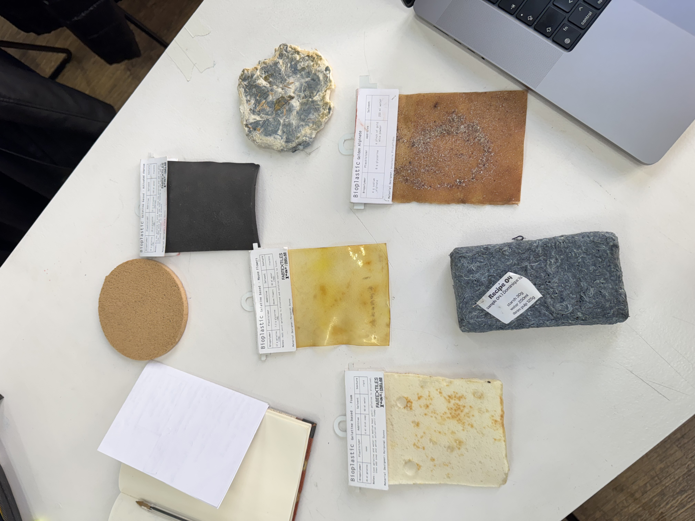
In this workshop, we broadened our horizons on bio-based material science. Materials that are made of organic components are all around us: wood, fabric, cardboard, and paper, to name the most ubiquitous ones. It turns out that there are a lot of organic compounds that can be used to create materials with a myriad of different properties.
I liked a lot how crafted materials have a more or less strict framework and relatively straightforward rules for their recipes:
You need a biopolymer, a biolasticizer, and a solvent to form a base, and then you can add all sorts of additional components, like algae, charcoal, or organic food leftovers, to name only a few.
Biopolymers
- Shrimp shells
- Agar Agar
- Cellulose
- Corn Starch
- Sodium Alginate
Biolasticizer
- Glycerol
- Sorbitolr
Solvent
- Water
- Vinegar
Despite this relatively straight forward framework of how to make a bioplastic, the possibilities are almost endless: By changing the ratios of Biopolymer and Biolasticiser just slightly or by adding another component like for example soap, the properties of the material can change completely.
In the context of this course, we also visited S-Biotica, a design collective with the goal to make biodesign more accessible to the community where we were introduced to living materials, mainly kombucha and mycelium. As always when we visit art / design collectives with the class im am thoroughly impressed.
In a quick workshop we got our hands a little bit dirty with mycelium, where we kneaded small shapes from mycelium-infused clay and after that we prepared a bottle of tea to grow more kumbucha scoby.
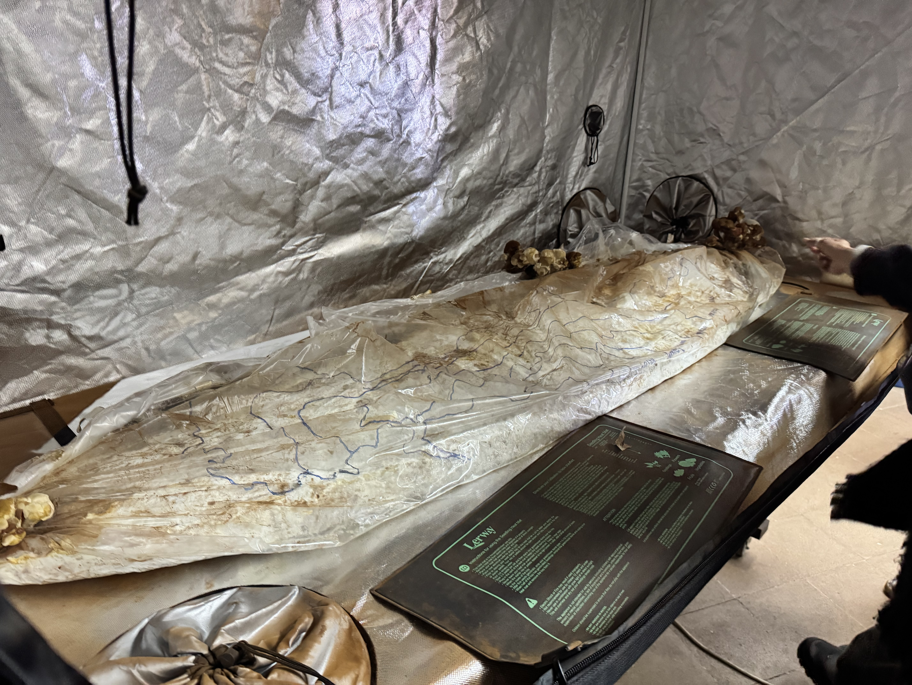
A surfboard made of mycelium because why not?
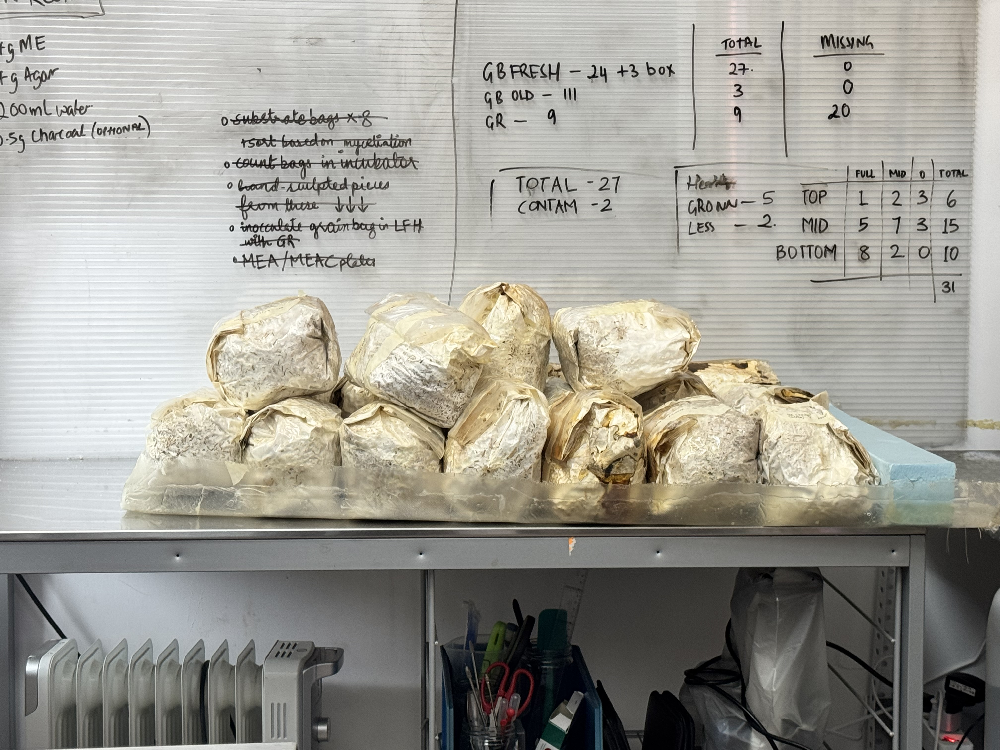
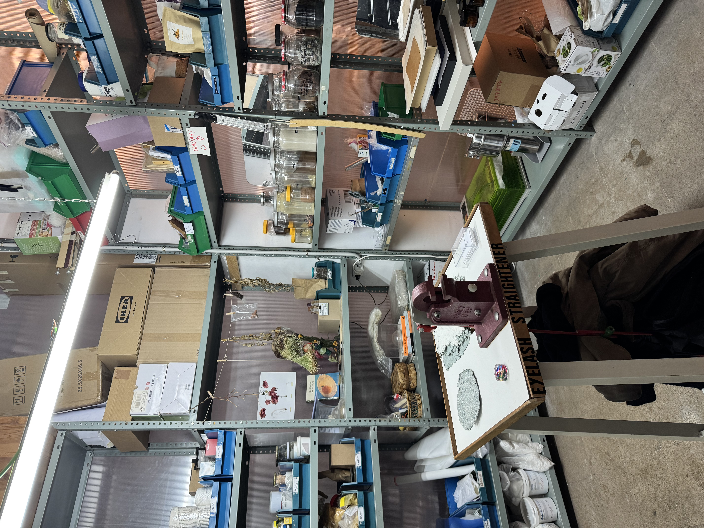
The “Eyelash straightener” from S-Biotica.
For our deliverable, Mohit had the very clear idea to use Garam Masala and other spices for our materials, and I am never above a little sillyness.
Recipe for our material
8g Agar Agar
7g Glycerol
200ml Water
+ a healthy spoon of spices
Garam Masala
Coriander
Oregano
Chili
Paprika
Salt
The “garam popsicle” happened, because we thought it would be interesting to see what happens if we pour a biomaterial in a pipe.
In the bottom of the pipe the unholy popsicle formed, but above that the material stuck to the inner walls of the pipe. After removing it, we were left with sometimes more, sometimes less intact snippets of a very slippery but firm hose, that I found very interesting.
Unfortunately, I didn’t document this part. I only have pictures of the dried hose snippets where they shrunk considerable and are a lot less slippery, but a lot firmer and still elastic.
I wanted to try out at some point if this technique could be used to insulate wires.

The casting of the popsicle.

Some leftovers of our Agar-garam-material before drying.
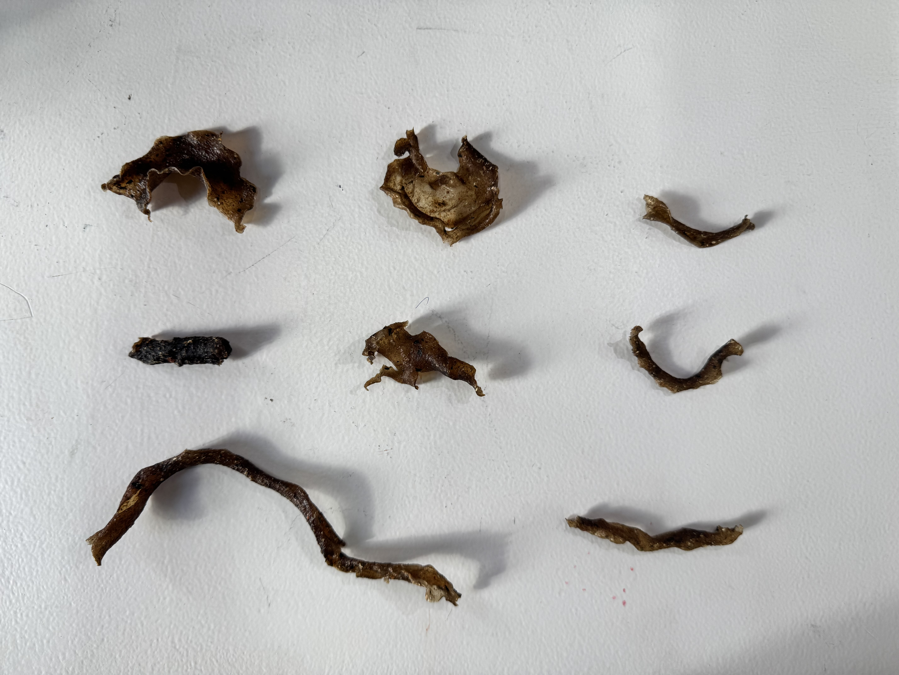
The materials fully dried. It is not sticky anymore, surprisingly firm and still elastic, except for the dried popsicle (top center), that one is very solid. Thanks to the spices, the material actually smells somewhat pleasant.
For the second video, I wanted to work with Kombucha since I already had some – very limited – experience with mycelium. It was great to get a feel for the material, since I already liked the way the dried Kombucha felt at S-Biotica. In the end however, it really didn’t taste as good as I made it look like in the video and I am not sure if it was safe to eat, but it’s been a few days now and I still feel alright.
Since the only materials i have gotten really familiar with so far are wood and PLA, this course was a lot of new input for me. I think biomaterials present a great variety of opportunities for the production of all sorts of objects by enabling more localized, personalized and most importantly regenerative fabrication. Even though I find all of this amazing, working with these sorts of materials will probably not be very central to my practice. Nevertheless, I definitely want to keep in mind what I learned in this course because I find it incredibly valuable and you never know when you might need something like this.
Deep insights on what design is, can and should be, input on communal organization of data, time, resources and fabrication and intense discussions about values and to practice them – this course concerned itself with topics that are very interesting to me.
Here are some insights that stuck with me from the introduction of the course:
Design has a lot of power and needs to be evaluated, so this power is not used without aim.
A designed object is not fully only influenced by and through us, but it also influences us in return: the phone designs us through the capabilities it offers us, which is a capacity of design that we need to consider.
Collective intelligence is the enhanced capacity that is created when people work together. It emerges when contributions are combined to become more than the sum of their parts.
Bauhaus influences what is seen in all the world as good design. That is complicated, because there is and should be more than one truth. Form follows function has become the holy grail of every design choice. It needs to be contested for diversity reasons, there cannot only be one good school of design from Germany in the 1950s that still dictates to this day what good design is here.
Women were allowed in the Bauhaus, but not to be Architects. They were forced to take the Crafts or Textile design classes.
Does Design really always have to go back to the roots of Bauhaus? Maybe the much more important question is how design emerges from a situated space naturally and grows to fit the situation.
Every-body is a designer and therefore everyone has valuable knowledge and experience that can contribute to the design process.
→ De-objectifying design:
You don’t only design an object, you design an action through an intervention.
→ Every-body is a designer:
Contradict the design gatekeeping bullshit, all of us make design choices throughout our daily life to shape ourselves and our surroundings.
To an issue, from a situated perspective, a design intervention is a response, not ‘the’ solution to this issue, using the knowledge and technology that is currently at hand.
Centralised
One center for distributing information to the world,
single source of truth.
Decentralised
Multiple centers of knowledge-sharing that are connected to each other, but the individual nodes do not communicate with eachother.
Distributed
Each node has the same rights and is connected to each other node, creating a resilient network were each and everyone can propose ideas and share approaches.
Distributed design leads away from the ‘traditional’ model from Extraction → Production → Distribution → Consumption → Waste. Towards Data In Data Out: Global Knowledge sharing, Local Circular Fabrication in a Fablab.
Issues are data storage, usage of ChatGPT, water usage for cooling.
Values
Values of Distributed design:
→ [open] source mentalities
→ [collaborative] making practices
→ [regenerative] design principles
→ [ecosystemic] approaches
“Values support communities to build their collective story, recognize members, support community structure and define (porous) boundaries”
Many different things can be values: Emotions, Sensations, Concepts or Principles, Ways of knowing, interacting and understanding. A value needs to be abstract in some manner, an Idea, an abstract concept, a quality or virtue or cultural norms can be valued, but without the possibility to draw a behavioral guideline from it, it is impossible to formulate a value:
Tomato: A tomato itself cannot be a value, but valuing a tomato might imply actual values like valuing healthy food or local agriculture.
meditating: cannot be a value, but might signify the valuing of mindfulness that is cultivated through meditation.
→ values are abstract principles that are being elevated to the rank of value through the act of accepting them as guidelines for behavior and decision-making.
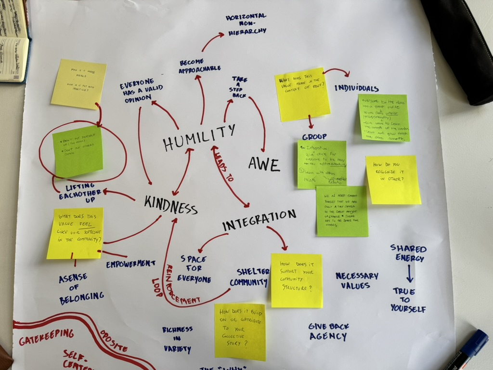
In groups, we tried to define a firm grasp the value Humility and on some other related values:
To get to it’s core, we tried to define it by answering some questions:
Perhaps most easily, what is humility not?
→ Humility is something that expresses itself most obviously in things that are lacking: The lack of boastfulness, the lack of overruling each other in conversations, the lack of mobbing, the lack of gatekeeping and self-centeredness of individuals within a community.
How is Humility made real and put into practice? How is it recognized in others?
→ Humility is most effectively cultivated by carefully listening to other opinions, by lifting each others opinion and expressions up and at the same taking a step back, creating a space for each other to express their feelings and ideas. To put it very simply: Humility shows itself in acts of kindness that come not from debt but from an open heart.
How does Humility support your community structure?
→ Humility put into practice creates a safe space. Every opinion and expression is valued. This builds trust between the members of a community and forges a deeper bond, enabling and empowering a more richly varied pool of contributions. The people inside the community feel valued, respected, integrated and in turn themselves inspired to act more humbly. In this way, Humility is strongly connected to Integration: Integrating others is an act of humility, and practicing humility in a community will lead to a strong feeling of integration.
Humility is an awareness of our limitations and a recognition that we are part of something larger—whether it be a community, nature, or the vast universe. It doesn’t mean thinking less of oneself but rather thinking beyond oneself. Humility allows us to acknowledge that we don’t have all the answers, that we depend on others, and that there is always more to learn.
Gratitude naturally follows humility. When we acknowledge that we are not entirely self-sufficient, we become more aware of the people, experiences, and circumstances that support and enrich our lives. Gratitude shifts our focus from what we lack to what we have, creating a sense of fulfillment rather than entitlement.
Awe arises when we encounter something vast and beyond our usual understanding—whether it’s a breathtaking sunset, a resonating piece of music, or a moment of deep human connection. Awe has the power to dissolve the ego, reinforcing humility by reminding us of how small we are in the grand scheme of things. At the same time, it fuels gratitude by making us appreciate the beauty and mystery of existence.
Awe inspires humility by reminding us that the world is awesome and aweful at the same time, by reminding us how small we are, giving us perspective beyond the self.
Humility and Gratitude deepen each other: by accepting that we are not the center of the world, we become more open to appreciating what we receive from the world around us, and appreciating the beauty around us makes us more comfortable not being the center of the world.
Through cultivating gratitude we become more attuned to the wonders of the world, deepening our sense of Awe.
Defining Humility together with Ramon, Kevin and Flavio was a great experience. Before that I haven’t really thought through my own values all that much, and even less discussed them with other people. I already felt a strong connection to my MDEF classmates and was pretty sure that we had a mostly homogenous valuebase, but it was amazing to deepen this common understanding in discussion.
Later we discussed our findings with the other groups. The groups that took on Friendship and Co-creation seemed to have shared very similar ideas to ours: Mutual benefit, cultivating safe spaces, sharing knowledge and reciprocity. Only the group that concerned it self with the value of change had some tensions, which makes a lot of sense in my opinion considering that change is a really big topic. In the end however they could find some common ground.
Talking about values and what makes them so important is a great exercise, but talking about a value is a very different thing from putting it into practice. So the next day in class, we talked in the same groups about developing practices that would cultivate our chosen value.
I liked this a lot because it felt more concrete than the discussion on the day before. My group tried to come up with ways to cultivate humility in the scenario of the MDEF Fest at the end of the first year. We talked about that it would be not very effective to pressure someone into feeling humble, so we tried to figure out how we could inspire humility in more subtle ways. The most noticeable ideas we came up with in my opinion were: First, to make the visitors write down something they are grateful for on a board when they enter the MDEF Fest, trying to open a pathway for humility through the related feeling of gratitude; Second, we wanted to prepare little gifts that we could give away to each other and to visitors to show our own humility and gratitude, inviting others into our shared practice.
Commons
The last day of our course was about the commons and how to distribute knowledge, resources and time. I liked this part and I want to go deeper into it since it is very closely related to my current project. Here are some more insights from the lecture:
Cooperation is way more likely to work than Competition.
When we have common resources, there needs to be distributed governance. The concept of the Commons is to integrate communities that already know how to manage their resources and allow them to contribute.
Considerations and Complexities when it comes to managing common pool resources:
Uncertainty and complexity of global systems reinforce the need for local, collective intelligence and action, rooted in adaptive practices.
If you cannot open a product and understand how it works, you do not own it.
“Building on these uses of commons as a noun, the verb commoning draws attention to the dynamic actions required to co-create commons in ways that contribute to opening up possibilities for how we care for eachother”
E.T. Smith, the Practice of Commoning.
DAOs and DACs
DAOs and DACs are Blockchain based systems that enables people to coordinate and govern themselves mediated by a set of self-executing rules deployed by a public blockchain. This was a bit hard to understand for me honestly since I don’t know a lot about blockchains, but it did sound like an interesting way for a community to organize itself, so I might have to look into it.
DAO
- gives shape to an improvised conversation
- ongoing reflection
- log of history that informs decision making
Why blockchain?
- transparency
- trusted handling of funds
- immutable record of project
- project runs autonomously
Finding common ground
In the end of the last day, we played a game called Finding the Common Ground 2.0. We were split into 5 groups, one of the groups being guests from the UK that participated through a Zoom call.
We were told very little of how the game works in the beginning, only that we can take up to 10 coins from a community pool with and either take them for our own project or invest them back into the community pool where they would increase after a while. In the first few rounds we couldn’t talk at all with eachother, only communicating with hand language and pen and paper. After a few rounds we were told about the community project we needed to fund alongside our own, so now we could also spend coins into different categories to make this community project work. Between the groups we could only communicate once at a 5 minute convention where we tried to figure out how much we all together had invested invested into the different categories, and our group was shocked to find out how much the others had all taken for themselves.
In the end we had to stop the game early because the lesson was over, but it was definitely an interesting simulation of the uncertainty and chaos that occur in distributing common resources.
In this course, we were introduced to some more ways of practically utilizing AI models.
With Dottod, we got together in a group (Paula, Maithili, Carlos, and I) to take pictures. We then used Dottod to have an AI describe the picture, modify this description with a prompt, and then use the modified description as a prompt to generate a new image.
Our game plan was to go to the park, interact with objects we found there in strange ways, and then ask Dottod to replace the actors while keeping the interaction as a kind of low-precision motion capture.
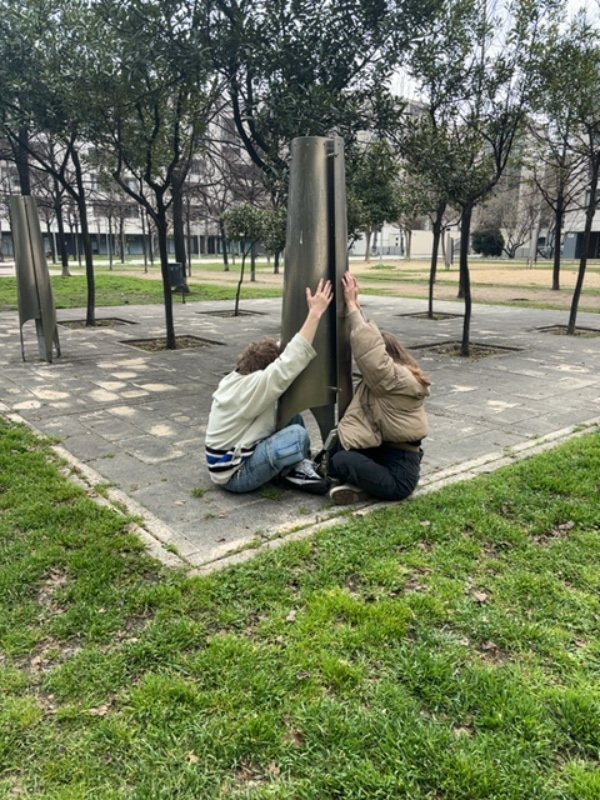
Exchanging Paula and me in an A Space Odyssey: 2001-inspired fashion for apes around a futuristic monument worked surprisingly well!
The next thing was to try to exchange the object we were hugging with the leg of an iron dinosaur.
It proved pretty hard to do since the AI wouldn’t generate pictures that didn’t show the whole body of the dinosaur, and hugging a whole dinosaur rather than just its leg was the closest we could get.
We also discovered a trend: if asked for a dinosaur, this AI will always respond with a T-Rex (or a similarly shaped one).
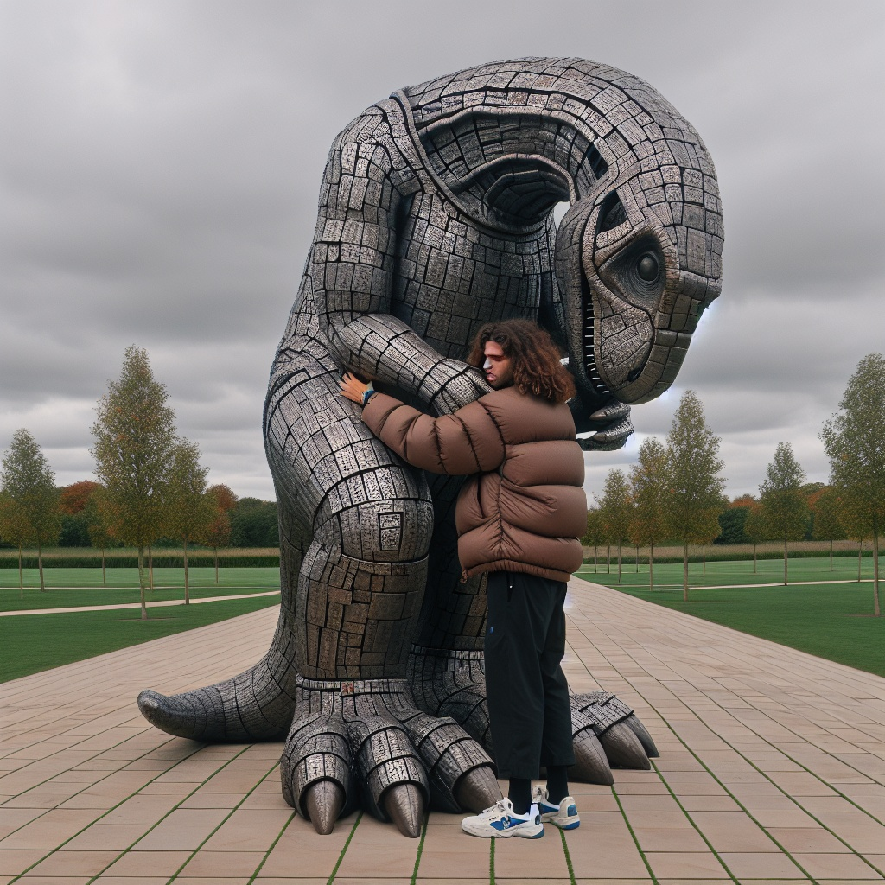
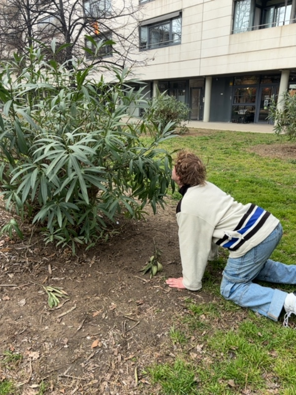
The plan here was to replace me with a dinosaur. For some reason, the first few pictures that were generated were actually two in one, split right down the middle. Also, in those, there was no dinosaur in sight.
After a while, we managed to get the prompt right and were rewarded with a dinosaur wearing clothes resembling mine.
But, again, it turned out to be T-Rex-shaped.
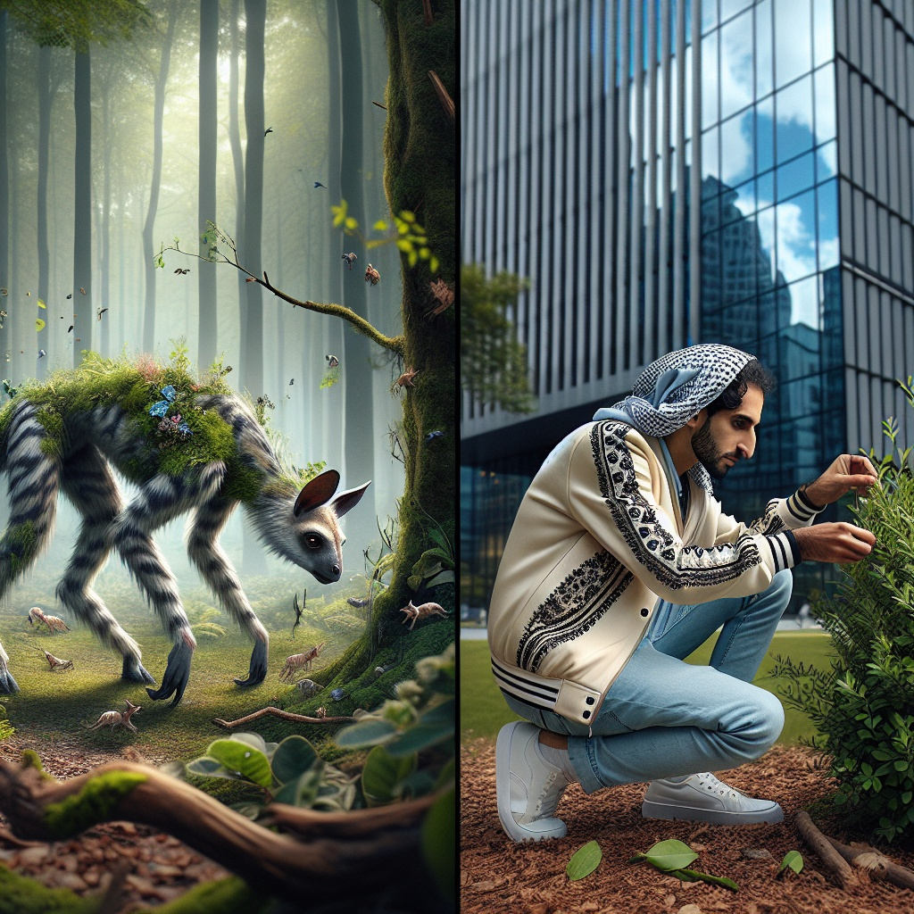
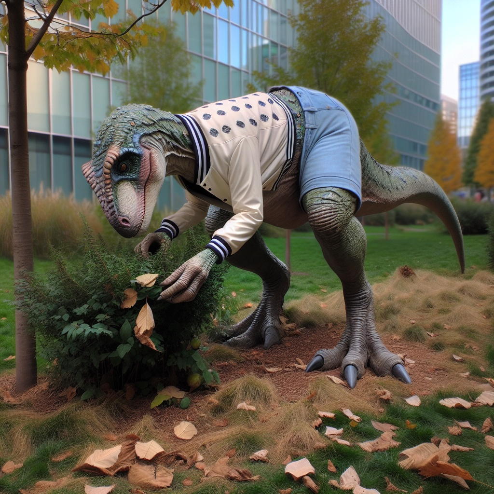
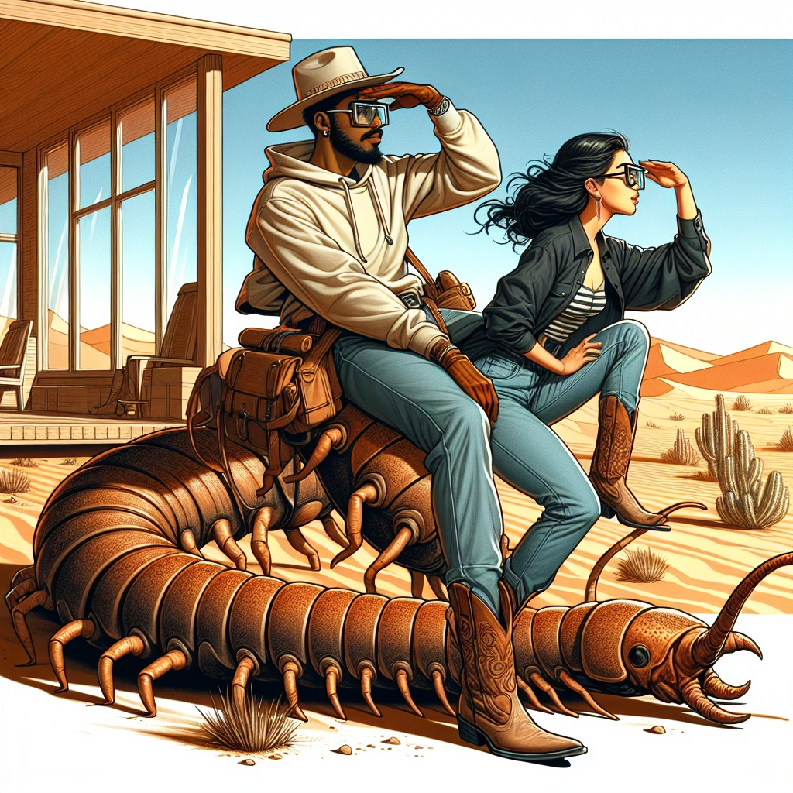
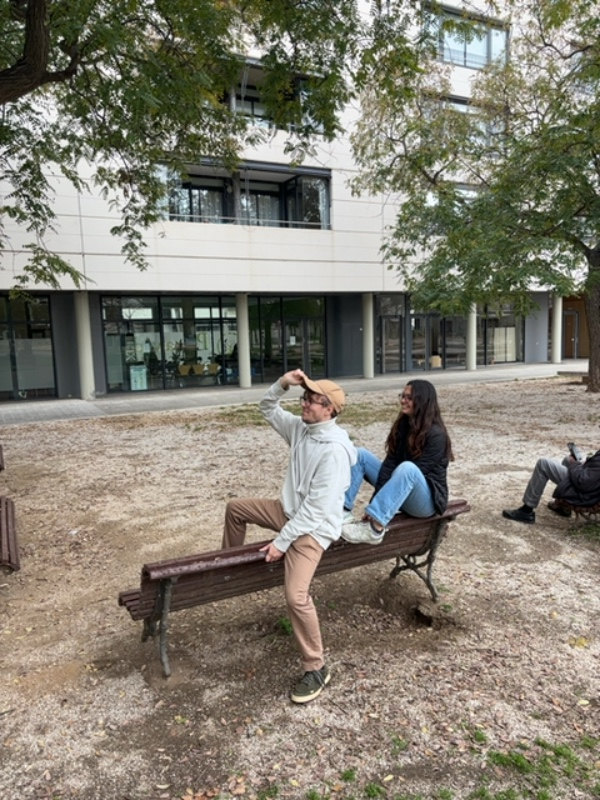
On our last picture, we wanted to replace the bench with an animal that Carlos and Maithili would ride.
The closest we could get was a picture starring a slightly disturbing half-centipede thing. Dottod really seemed to struggle with replacing an inanimate object with a living one, and it didn’t quite grasp the distinction between riding and sitting on something, even though we clearly stated that in the modified prompt.
On ModMatrix, I played around with generating STL files from text input. The first and least complex prompt—a cereal bowl—provided a functional result.
The second object I tried to create, a kitchen knife, turned out much worse. I experimented with different styles of prompts: some using names of common knife shapes, others providing very straightforward, specific details on the shape. As you can see for yourselves, these attempts were all pretty far off.
A “desk lamp” worked somewhat alright.

A cereal bowl

A desk lamp
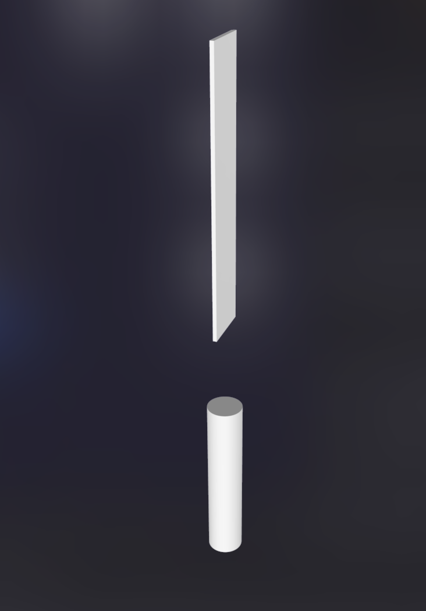
The kitchen knife collection
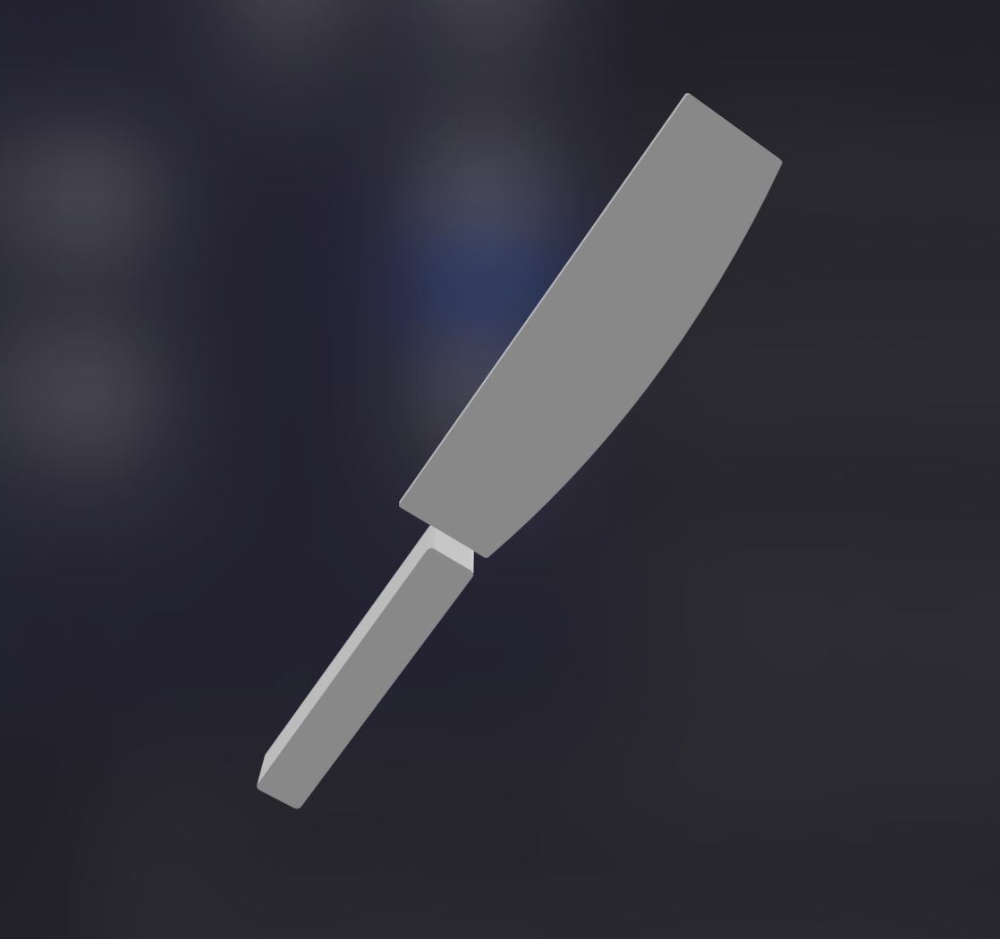
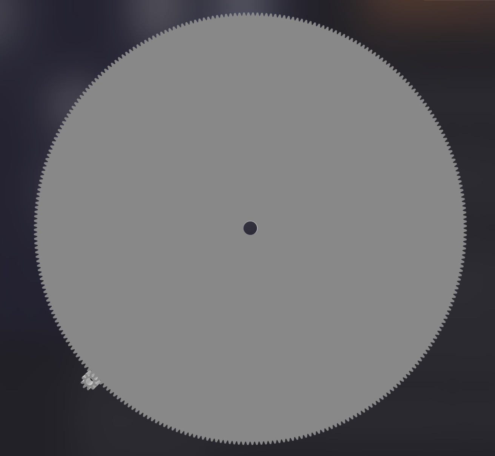
Generating a 1:30 gear reduction mechanism surprised me a lot by actually producing gears that looked to be about 1:30, though I wasn’t able to confirm how exact it was.
However, specifying the input by breaking up the gear reduction into stages or incorporating it into a box failed. Trying to generate STL files from images, audio, or overly long text inputs also failed altogether.

A bluetooth speaker shaped like a moai statue
ZooCAD seems to generate simple geometric shapes easily, but as soon as it is asked for more complex composite or organic shapes, it quickly struggles. As with every tool, it only works well for some things. However, I’m so used to being blown away by AI that this felt like a bit of a letdown.
However, considering that ModMatrix labels the CAD output as experimental—and that it will probably improve soon, as these things tend to do—I definitely want to keep up with it because it seems to have a lot of potential.
For the last part, our task was to give a directive to an AI on the internet, then provide it with some sensor data from an Arduino circuit. The AI would then decide on one of a few possible actions for the Arduino to execute whichever was most aligned with this directive.
I would have really liked to come up with something relevant to my project, but I struggled a lot with this. Usually, I love exercises like this, so I started to second-guess my project a little in this regard.
On the other hand, I don’t want to use AI just for the sake of using a cool, modern technology (that also has its darker sides, as most technologies do).
In the end, instead of doing something silly, I joined Marius in working on an already more or less concrete idea he wanted to implement in his project.
For his project, Marius is developing a platform where communities can upload data that is then analyzed by an AI, so that there will be a model for each community that can answer questions regarding their organization, gathered knowledge, or other related information.
Building on this, he wanted to implement a way of automatically switching between different community AIs, depending on the relative location or proximity to a community.
First, we thought about comparing GPS data, but in the end, we settled on just using different Wi-Fis.
So for our first experiment, we used Ollama 3.2 with 1B parameters, which Marius runs locally on his overpowered Raspberry Pi 5 with 16GB RAM. Depending on the SSID of the Wi-Fi that the Raspberry Pi is currently connected to, we would change the system prompt of the AI. For this, we used the Wi-Fi of IAAC and both our mobile phone hotspots.
This worked really well; however, Ollama didn’t seem to know a lot about IAAC, so most of the information it provided was pretty far from being correct. After we specified in the system prompt that it shouldn’t tell us anything it wasn’t sure about, it would only respond with ‘I don’t know.’
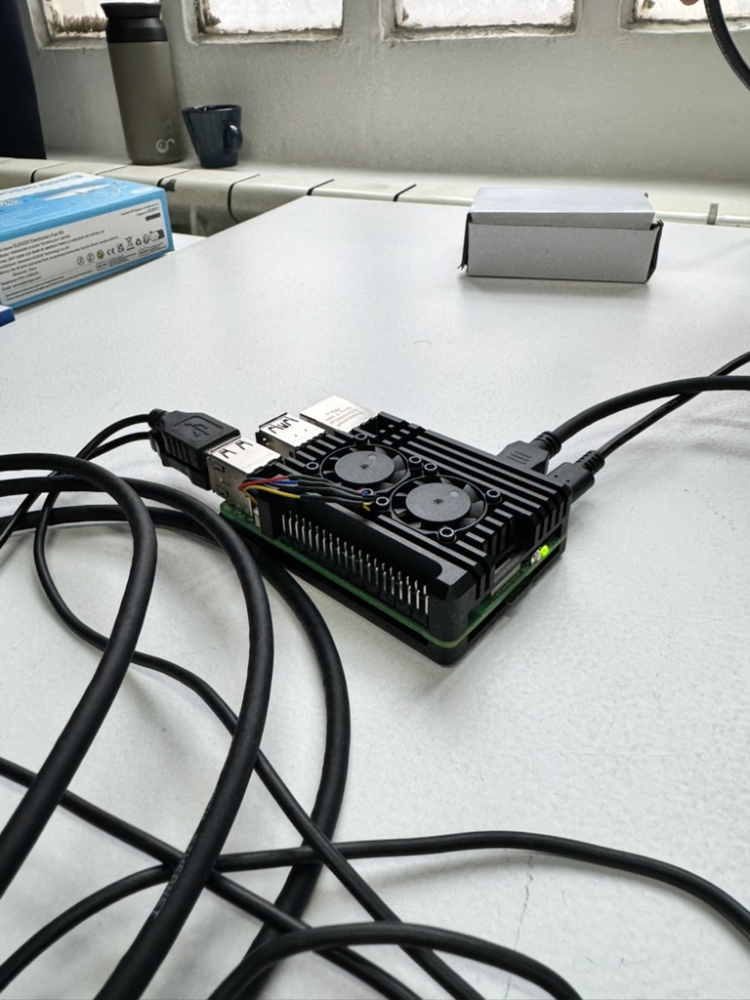
if wifi_ssid == "Iaac-Wifi":
system_prompt = f"{base_constraints} You are at IAAC University in Barcelona, Poblenou. Focus on verified facts about IAAC, Poblenou, and Barcelona's innovation district."
elif wifi_ssid == "Helmholm":
system_prompt = f"{base_constraints} You are at home. Be casual and funny. Always answer in spanish."
elif wifi_ssid == "MariusiPhone":
system_prompt = f"{base_constraints} You are in the pocket of a chill dude with a lot of style. Stay Humble! Maintain professional communication and focus on verified, work-relevant information."
For our second iteration, instead of the local model, we used GPT-3.5 Turbo by OpenAI through an API. This worked a lot better since the responses were much faster, and they contained correct information from time to time.
So much for our proof of concept.
The code can be found on Marius’ GitHub.
As a third iteration, because we still had a little time, we tried to convince Copilot to help us get information about the Wi-Fi we were connected to by hacking it as much as possible. Unfortunately, this didn’t work great. We were able to get information like the signal strength, security, and frequency.
Using Mozilla Location Services, we tried to figure out the geolocation of the Wi-Fi we were currently connected to, but that unfortunately didn’t work for any of the three Wi-Fis we used.
AI is a powerful tool, so I am more than happy to experiment with ways of applying it. Oftentimes, it is difficult for me to find a useful application where AI actually provides additional value to the project, but in certain scenarios, AI is the perfect tool for the job. For my bachelor's thesis, my team and I trained a model we could run embedded on an ESP using Edge Impulse to classify how much driving a bike over different surfaces in the city would vibrate using data from an accelerometer.
Realizing this part of the project was greatly facilitated by the fact that we were able to use AI as a tool to achieve our goal effectively.
Because of this, I enjoy keeping up with what AI is capable of. For this purpose, the Extended Intelligence II course definitely helped me a lot, and I was able to file away different methods of applying AI for possible later use.

In the H(n)MI course, we talked about how the behaviours of our bodies generate data by leaving traces in digital space. Visualizing this data can be a powerful tool, so we learned how to use Arduino and a pressure sensor along with visualization tools like Processing or p5js to generate visual or audible outputs with our movement patterns.
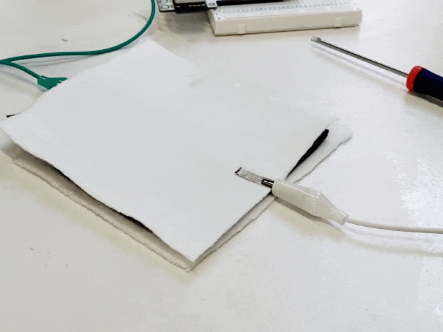
The different layers of our homemade pressure sensor.
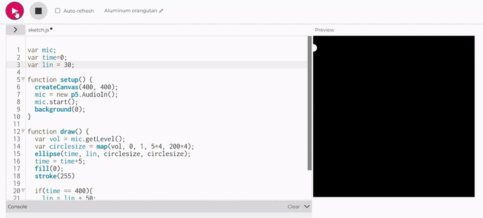
Visualization of the pressure value over time.
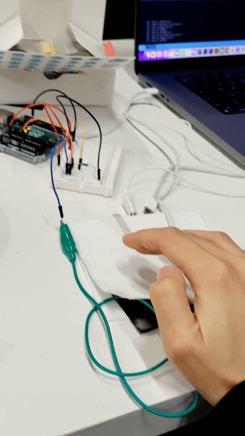
The project was continued two weeks later as part of the Expanding Frames workshop. We had two days to develop a project in this context. Paula and I decided, that since the courses' title put emphasis on the 'non-human', we wanted to record data not from our own bodies, but from another living being. Since Paula has been working with Slime Molds, they turned out to be a perfect candidate for our experiment. Instead of using an Arduino, we decided to process visual data from a slime mold in the form of a growth timelapse using p5js.
By defining a threshhold for determining yellow pixels, we counted the amount of yellow pixels in different areas of the video, using that to control a pentatonic scale of notes alongside a visual representation. Take a look at the live demo!
A more in-depth documentation of the code can be found on github aswell, along with a more detailed diary of our experimentation with the pressure sensor.

I enjoyed the contents of the H(n)MI workshop a lot. The first part was a bit slow for me personally, but only because I already have some experience with electronics and p5.js. It was still fun to play around a bit and watch the others struggle (;
During the continuation at the Expanding Frames workshop, I had the opportunity to get back into p5.js, which I always enjoy, as well as advance my coding abilities (of course, with the help of Copilot). For me, it was really surprising how easy it was to set up the low-tech computer vision variant that we used for this project, and even more surprising how well it worked—at least in these very controlled circumstances.
Collecting, processing, and explaining data is a process that I have some experience with, and I enjoyed that we had so much focus on that topic this term. The technology I used in this workshop fascinated me a lot and pushed data collection and visualization back into my focus.
Also, working with Paula and her perspective on slime molds was a very enlightening experience, and the shapes, patterns, and even sounds (!) they create fascinated me a lot. I might be leaning out of my main area of interest a bit, but some of the feedback we got after our presentation suggested creating a live-growth surround sound installation, which I think would be amazing.
In the communicating ideas course, we were given different tools to define our projects more clearly, expand them to differnet communities and talk about it more precisely.
For the tandem interview, David and I asked eachother questions about our projects to help eachother get a better grasp on what we actually want to do. This turned out to be very helpful and we even continued this practice from time to time on our own.
Part of the communicating ideas course was also to create a social media account which I was reluctant to do at first because I was at the time very inactive on social media and intended to keep it that way. However, now that I got over my initial aversions, I think it's a great way to put together a simple quick access portfolio and a nice way to get feedback from people I wouldn't otherwise get any feedback from. My social media can be found under the tag @bechtian on instagram.
Project Definitions
The project aims to share knowledge that allows a group of people to gain independence from long and abstract supply and production chains by taking small steps towards cultivating their own supply systems for food, water and energy. The goal is to empower people to reclaim autonomy through collaboration, resilience, and shared responsibility, taking power from corporations and removing layers of abstraction between origin and consumption of a resource, forging closer relations between the resources and people.
16 words
Share knowledge to allow communities to gain independence from corporations by collectively cultivating their own resources.
8 words
Enable communities to gain indepence by cultivating resources.
Paragraph Defintion
This project aims to help people organize their lives around shared resources and mutual interdependence, moving away from the isolation and systemic dependencies of modern life. The goal is not to create another co-living model but to break down the core principles of communal living into accessible, practical steps. This includes sharing resources like food, energy, water, living space, mental capacity, and services, and organizing these exchanges without relying on traditional economic structures.
While the project envisions a future where everyone can participate, it will initially target groups that are already receptive to alternative ways of living, such as those in off-grid communities, communal living spaces, or community gardens. The project also aims to inspire young people who are more open to change and new systems of interdependence.
Success will be measured by the formation of a community that actively engages with and supports the project, contributing knowledge, funding, and efforts. This community will start organizing itself in ways that enable people to rely on each other instead of traditional capitalist systems.
While the project is not about offering another co-living model, it seeks to provide resources and tools that make communal living easier, such as a compendium that explores the human and technological aspects of communal resource sharing. In the future, the project could develop a tangible artifact to complement the compendium, telling the story of the project and its principles in a compelling, practical way.
Purpose Statement
We reclaim power by organizing life around people, not profit. Through stories, knowledge, and tangible tools, we help communities share resources and build autonomy—making interdependence a real alternative to systemic isolation and exploitation.
The concept of a situated practice was first introduced in the MDEF course. It runs pretty contrary to the industry-oriented approach of user experience design that was taught at my previous school.
Considering that I came to IAAC because it was very difficult for me to align this approach with my interests and values, it makes a lot of sense that I came to like situated design practices a lot—a practice developed within a certain space by individuals who have a deep understanding of their context, rather than a top-down, one-size-fits-all solution.
Unfortunately, to develop such a practice, a certain kind of environment is necessary, and the way our governments currently run the markets does not encourage these. However, this does not mean it cannot be done. In the context of this course, we were introduced to four groups or individuals who have cultivated such a practice for themselves.
Cal Negre
The visit to Cal Negre was, to me, one of the most vivid days of the IAAC course to this day. We were confronted with more than one situated design practice that day.
An old farmer named Jaume, a neighbor of the artists at Cal Negre, showed us how he had turned his old house and farm partly into an exhibition to preserve the heritage of his context, which was quite emotional. He also let us collect some crops from his field so we could make lunch later on.

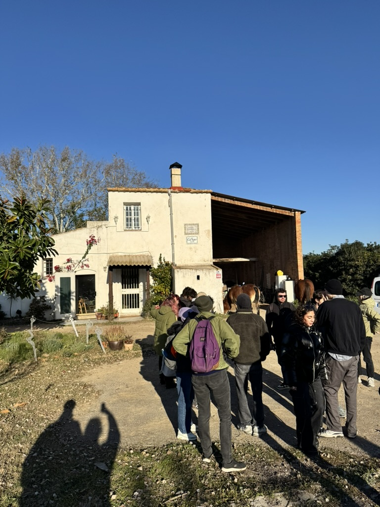
A falconer showed us two of his falcons and talked about his work at the airport. Somehow, it was deeply satisfying to me that training falcons is still a widely practiced method of clearing an airport of other birds. I found myself deeply impressed by this man, but part of that can probably be attributed to the falcon on his arm.
The artists living at Cal Negre showed us their workshop and talked about their individual practices. Later, we made lunch—which was delicious, by the way—and took some time to enjoy the sun.
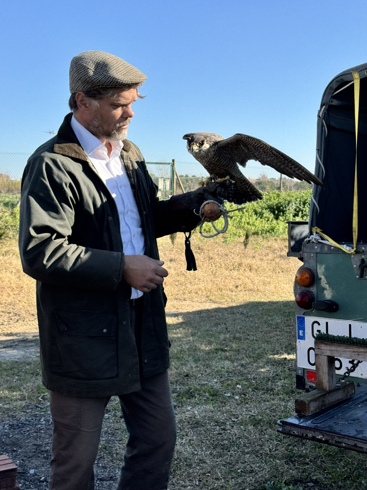
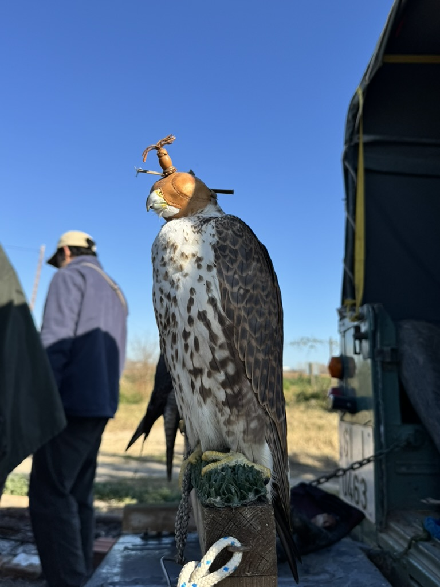
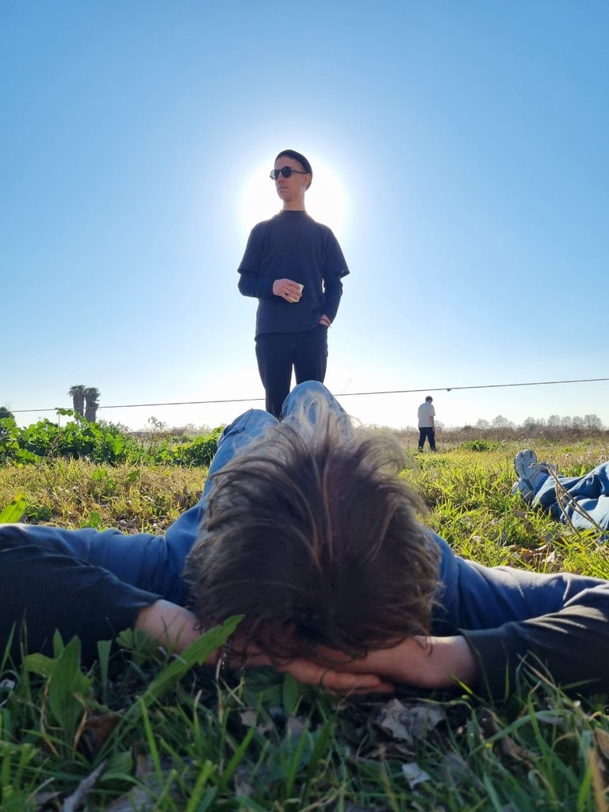
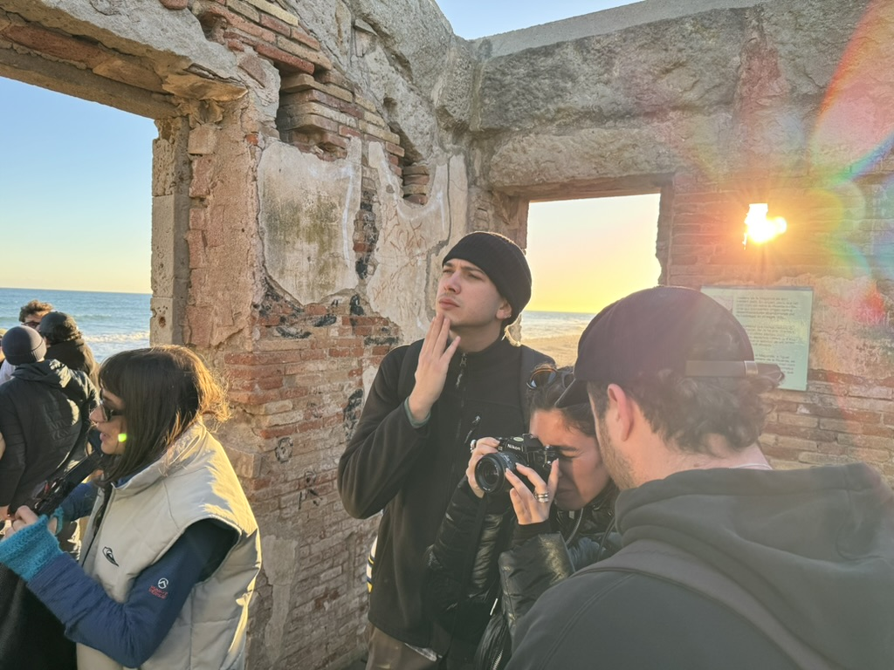
In the afternoon, we took a short bike trip through the beautiful area around the mouth of the River Llobregat, visiting some ruins and lookout spots that looked thoroughly breathtaking in the golden light of the afternoon sun.

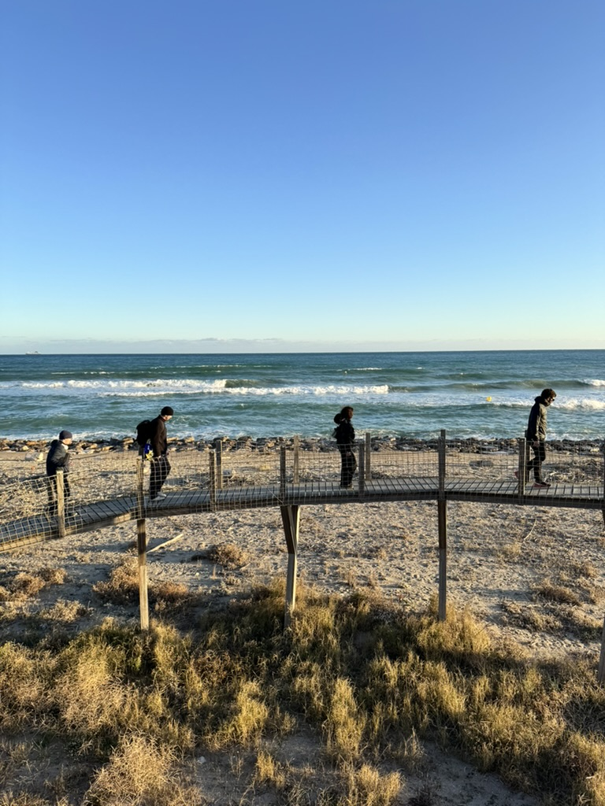
Hibai Arbide
Borders are an arbitrary construct, yet they dictate who gets to live safely and who doesn’t—pure chance. Refugee camps, though created out of crisis, often become makeshift communities where people share resources and support each other for survival.
For me, this lecture was pretty hard to digest, but it is incredibly important work to shed light on the inhumane conditions present in these contexts. The small spark of something that this lesson gave me is that interdependence can emerge under extreme conditions.
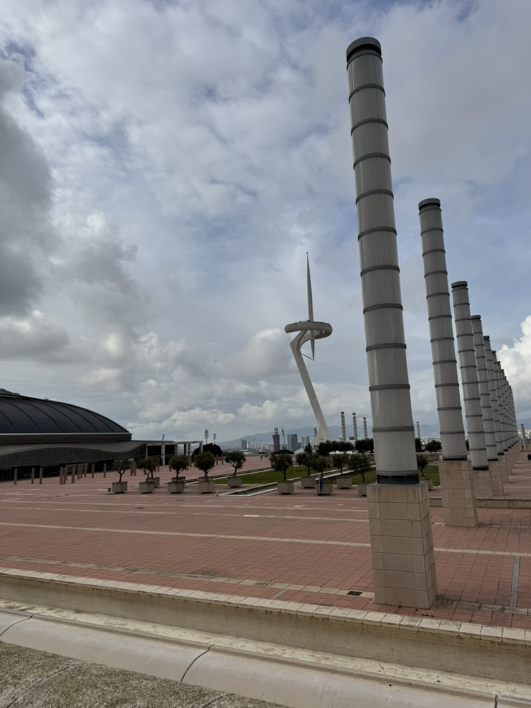
FOC
Before visiting the collective, we took a beautiful walk through Montjuïc, slowly reaching and adjusting ourselves to the area where our hosts for the day are situated.
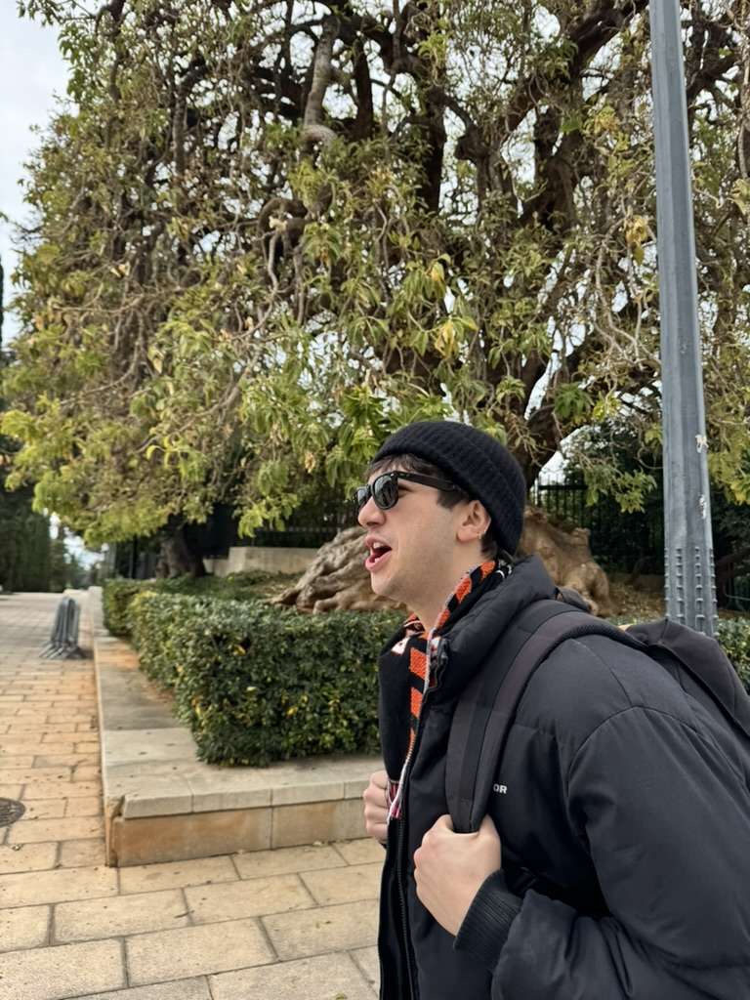
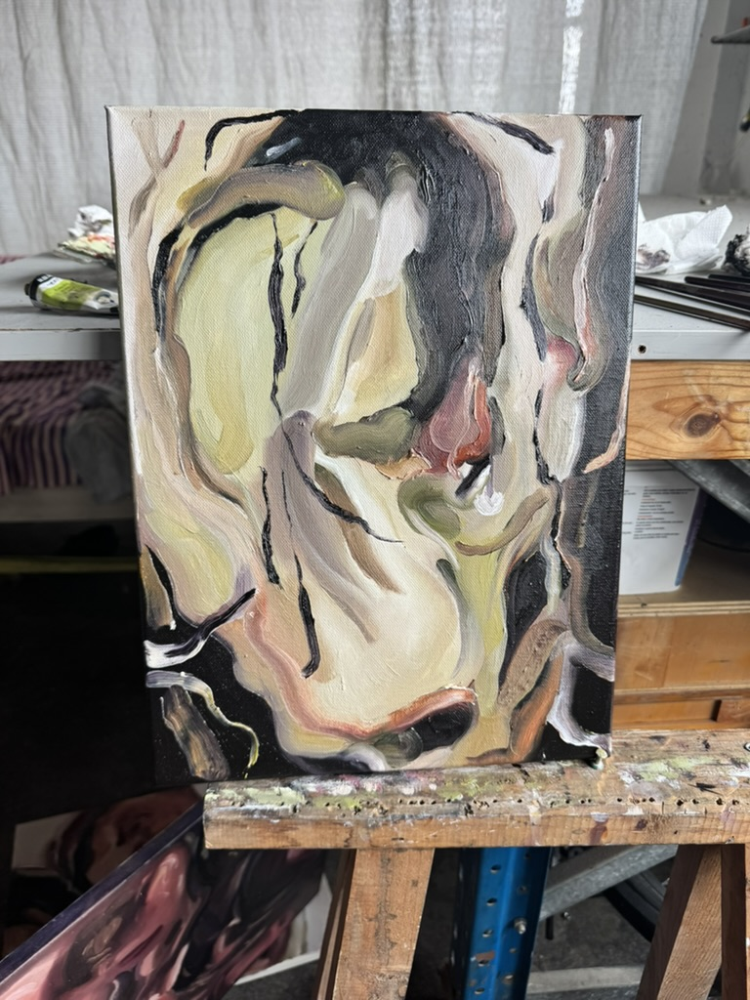
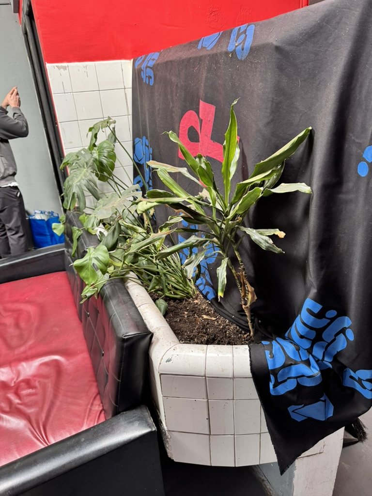
The FOC space was incredibly unique and inspiring. It is located in the top floor of an abandoned industrial building that they somehow renovated and made into a space for artists to work on their projects and for the Jokkoo collective to make music as well as organize and host events.
We spent some time there recording sounds we could make with different objects we found at the space which was a lot of fun. We then went on to synthesize(?) music from these sounds. I don’t understand a lot about music but it was a great collaborative experience anyway.
Ben Ditto
In my head, the word ‘unhinged’ has never appeared so often as in the session we had with this man and I am still somewhere between despising his seeming lack of giving any fuck at all and admiring his considerable amount of being true to himself.
Social media was never a particular interest of me, and I used to mostly see it as a necessary evil that must be kept as marginal as possible because it is a distraction from what is real. Ben has offered a 180° completely contrary perspective to that. He doesn’t waste time on social media because he deeply enjoys it. He calls himself a troll and a shitposter and what not and is very much successful with that.
His way of treating the internet made me think a lot about how we still don’t really know how to use the internet well as a society and that it would probably make a lot of sense to establish some common ground at some point.
On the same day we had a lesson of communicating ideas, which helped me put Ben into context.
What I took away is that the internet as a technology that enables everyone to tell a story, giving rise to an unimaginable amount of perspectives and diversifying content by magnitudes only works the way we imagine if we actually contribute. It is a bit like voting in a democracy: if you don’t participate, you give up your voice and someone else will use that vacuum that you leave instead.
Reflection
Honestly I don’t have a lot more to say than: “Yes, I want this, some day”. Cultivating a space and a community around yourself, then cultivating yourself in the context of the community and the space, this kind of co-shaping is a way in which I can see myself interacting with my environment in a way that satisfies me.
There are many different ways of living a situated practice. The important thing is to immerse yourself in a context, gaining deep understanding and then taking actions in harmony with that what the space inspires in you. However, the contexts of Cal Negre and FOC specifically inspired me a lot.
I have been thinking about concepts like these occasionally in the past, dreaming with friends about somehow acquiring an old factory hall or an abandoned hangar, building hydroponic farms on the rooftop and a mushroom farm in the basement.
An electronics workshop, a bouldering hall, some skating installations and a pretty office would all fit in there alongside our living spaces in our imagination.
What this course has taught me is that these thoughts don’t have to be far fetched dreams and that there is actually something to these ideas. The familiarity and deep contentment the members of the collectives radiated and infected us with made me want to pursue this even more.
A practice becomes meaningful, when the people that are involved are convinced of it’s intentions. The powerful feeling of unity and shared purpose that I want for my own life emerges in situated design practices, not in the context of a company where everybody wants to surpass the other in order to make more money or have more success or whatever they believe.
Reflection 1
The design space has shifted a lot over time — not so much in direction, but in scale and clarity. I started with questions around technology, self-sufficiency, and how people can live together better, and those questions have stayed consistent. The way I explore them has changed, however — moving from abstract ideas to practical interventions within the city.
Drifting in different ways has slowly clarified the project. I’ve tried probing topics like water usage and mobile phone longevity. Some were expansive, like experimenting with mycelium to recycle material scraps. Others were slow and serial, like engaging with a local community garden over time — understanding its dynamics, earning trust, and testing ideas with real people in a real community.
For now i’m focusing on the idea of hacking systems we rely on every day, not only digitally, but socially and materially. I want to build tools that people can use to regain some control over their resources — simple, open-source systems that reduce waste, increase resilience, and support local independence.
The goal is to make collective action easier by employing tools designed for small scale, custom approaches.
Ways of Drifting
The design space has changed much from its first implementation, but the broader topics have mostly stayed consistent. Technology, self-sufficiency, and the third topic related to how people coexist for mutual benefit have been central to the design space from the beginning. At some points, details have changed, and topics like biomaterials have disappeared. The center of my project, which the design space visually introduced in the second iteration, has changed its content, and some things have been rearranged.
There has not been a lot of focus in the project to make anything really in-depth enough to be accumulative; only my engagement in a community garden could be seen as accumulating trust of the other members and understanding of community structures.
Some of my drifting could also be described as comparative. Early in the year, I wanted to define different scales for the different elements in my design space. Through trying to examine the topic of communal living from different scales, I ended up moving away from that topic specifically to smaller scales of collective action that fit better into the context of a city.
The line of interventions at the community garden was serial in a very classical sense. In a particular order, I would gradually get closer to the community and interact with the different members in different contexts. One design intervention was to present the prototype of our task management board to the community at an assembly and collect some feedback and ideas. The naturally following one was to implement those ideas and install the board in the garden.
At the start of the MDEF course, I was interested in biomaterials, working on an intervention where I wanted to understand how mycelium could be used to recycle material scraps in the first term. This could be understood as expansive, as biomaterials are relatively far from anything I’ve been working with before. However, working with mycelium for the first time made me understand that, at least for now, I want to focus on topics that I have at least some experience with. By now, I have not really expanded my area of interest with new topics, even though there have been some ideas. I always felt like there were enough opportunities related to the topics at the center of my research.
The general area of interest has been more or less clearly defined from the beginning of the course, and especially in the first term,
I have been probing different topics within this area through unrelated interventions, trying to understand different topics on a deeper level—going into water consumption, mobile phone longevity and, as already mentioned, mycelium to enable reuse of small scraps of material waste.
The alternative present proposed during the second term has been adapted a little to reflect the shift in focus to employing technology and sharing knowledge to facilitate collective action.
The installation of the (digitally fabricated) Management Board in Espai Germanetes was a very small step taken in the direction of utilization of technology to facilitate collective action. The next chapter of the project, the collaboration with Sembra d’Aigua at Germanetes will give me the opportunity to explore this topic further.
Continuous Present
Citizens in Barcelona like myself buy their resources like energy and food from regional or global companies, making themselves fully depend on these companies and being subject to the fluctuations of the global open market. The innumerous layers of abstraction between the origin of a resource and its destination foster a sense of apathy and encourage wastefulness and overconsumption.
Alternative Present
Citizens in Barcelona like myself are gaining back a small amount of agency and independency through a communal practice of self-sustenance by making efforts to acquire a part of their required resources from local community organizations. Citizens find locally organized groups that are equipped with tools and knowledge to efficiently appropriate, manage and redistribute common resources, removing layers of abstraction to rebuild a relationship between resource and consumer.
Narrative Proposal
Technological systems are the focal points of our lives — we adapt to them, rely on them, depend on them. But what if we didn’t? What if we treated these systems not as untouchable black boxes, but as a playground?
The project is about reappropriation. About hacking — not in the narrow digital sense, but as a way of understanding technology: the ability to alter and rebuild the systems that shape our lives. It’s about using technology not to serve profit, but to serve communities.
Humans have been successful because they collaborate. Today, the systems we’re expected to “collaborate” with are corporate giants that hoard power, extract resources, and leave communities dependent and disconnected. Fortunately enough, any system can be hacked, and a good way to start hacking global extractivism is through a more peer to peer-based form of collaboration: with our neighbors, our communities, our networks. The technologies that we need exist — what’s missing is accessible tools, transparency and curiosity.
We don’t need high-tech spectacle — we need practical, well-designed, open systems that help people become more independent, less wasteful, and more resilient together. Water is a good place to start. Why do we flush toilets with drinkable water, when agriculture is drying out our soils? Why do we waste vegetables that don’t look pretty enough to sell?
Using the resources that are at hand cleverly is a considerable part of what shaped human history. We don’t have a shortage of water, food, or materials.
What we lack is distribution, efficiency, and care. Rethinking what we define as luxury and becoming specialists in never wasting valuable resources are the tools that can provide enough material wealth for everyone to live well.
The goal of this project is to develop tools, share knowledge, and put systems in place that facilitate collective appropriation and management of available resources through thoughtful collaboration and using adequate technologies.
Sembras d’Aigua: Hacking water cycles
Participating in assemblies at Espai Germanetes, Andrea and I learned about the development of a project called Sembras d’Aigua. In the face of increasing droughts and subsequently restricted water access, the project repurposes gray water from public facilities, creating an additional cycle in the water system that extends the life cycle of water through filtration, storage, and redistribution.
The initiative collaborates with nearby schools, involving the children in the collection of gray water. The water is then filtered using plant-root-based biofiltration systems, a low-tech but effective method that removes contaminants through microbial absorption. It is funded by the Bithabitat Foundation as part of an open call that the Association of Espai Germanetes applied to.

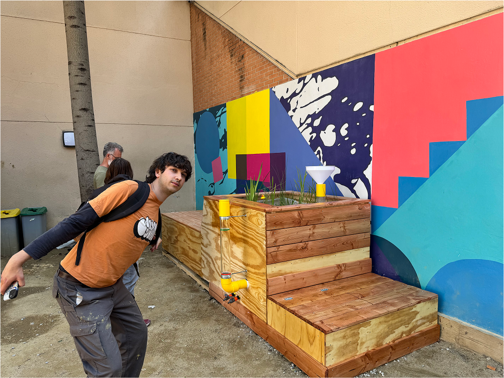
Wanting to assist the development of the project, Andrea and I participated in the construction of the gray water filtration modules in Escola Diputació and in the garden itself. We collaborated with architects and carpenters, as well as a gray water filtration specialist. From him, we learned everything about the principles of gray water filtration that we didn’t understand anyway by building the modules.
The project acts as an approach to hack the urban water infrastructure — introducing a parallel, community-managed water cycle that operates outside the rigid structures of municipal supply. By doing so, it not only provides an essential resource for urban agriculture but also redefines how water can be valued and distributed by adding additional layers of water utilization.

Beyond its practical impact, the project also illustrates how decentralized systems can address pressing environmental challenges. It invites residents to rethink water as a shared commons rather than a commodity, reinforcing the role of collective action in building climate resilience at the local level.
Through our participation in this project, for the first time we fully understood the value of community immersion: the opportunity to meet people who are knowledgeable in topics relevant to us, with both interest and experience in working with communities.
@viver_tres_turons, @marcosenzastudio, @lab.lemur, @comunitatsdesembradaigua

Reflection 2
My design vision focuses on building open-source tools that enable community self-reliance—practical systems like gray water recycling, solar servers, and DIY fabrication kits that are meant to be adapted, shared, and improved collectively.
Sustainability for this kind of work requires both grounded relationships and long-term infrastructure.
Working closely with communities allows the tools I develop to be rooted in real-world needs, while open documentation and versioned fabrication files make them accessible and maintainable over time.
Professionally, I aim to touch on design, research, and facilitation—contributing to knowledge production while remaining actively involved in the hands-on, social dimensions of collaborative making.
To support this, I plan to pursue research funding or a PhD after graduation, while forming a studio or association with peers to continue developing and distributing tools. The goal in the long term is building networks of mutual support, investing in shared resources, and cultivating a practice that remains flexible, responsive, and embedded in collective contexts.
Roadmap for an Open Source Infrastructure for Community Self-Reliance
This project explores how open-source tools and fabrication methods can support communities in becoming more self-reliant. It focuses on designing and sharing practical kits—fabrication files and instructions—that address basic needs like water, energy, repair, and communication. The long-term vision is to build a growing network of communities and collaborators who exchange ideas, adapt tools, and develop new ones together. The work unfolds across four evolving phases:
The first phase is about laying the foundation. This includes launching a website hosted on a solar-powered server and starting a GitHub repository where fabrication plans and manuals can be shared openly. Initial kits focus on accessible, low-tech infrastructure that communities can adapt and develop:
- Gray water filtration modules
- Brick rocket ovens
- Solar server systems
The goal is to begin documenting and publishing everything in a clear, replicable format, while also creating the conditions for future contributions. This first set of tools forms the base for an expanding library of community-led designs. It’s a time for building trust, working prototypes, and clear documentation that others can pick up and build on.
With the basics in place, the second phase is about developing and testing new ideas in collaboration with communities. The aim is to develop 2–4 additional projects by the end of the year, focusing on creative reuses of discarded components and low-cost educational or infrastructural tools. Potential projects include:
- DIY tattoo machines from salvaged motors
- Small wind turbines built from salvaged motors
- Electronics education bricks based on modified LEGO pieces
- A repair diary system to share repair knowledge on maintenance practices
At the same time, this phase will focus on shaping the research questions and methods that support the project, paying close attention to how communities adapt, improve, or repurpose the tools in practice. As the project becomes more outward-facing, it requires both technical development and social listening: understanding who these tools serve and how they might be most useful.
Getting in touch with potential partners—whether informal collectives, institutional actors, or funders—will also be an important part of this phase.
In the third phase, following the completion of the master’s, the goal is to keep the project alive and growing. This includes applying for research or PhD funding to give the work long-term stability while continuing to explore the role of open hardware and community-led infrastructure. The focus will shift slightly toward understanding how open-source tools can be distributed, sustained, and made meaningful across different contexts.
Alongside that, there’s a plan to start a studio or association with colleagues—by setting up a shared workshop or studio where the collaborators can work on parallel or intersecting questions. This structure will provide the stability and community needed to keep building and experimenting.
Looking further ahead, the project aims to become part of a wider, decentralized network of makers, tinkerers, educators, and communities. As more people begin to use, modify, and create their own kits, the focus will turn toward supporting this growing ecosystem—through documentation, shared standards, and community-governed maintenance.
This phase may involve working with schools, cooperatives, or public initiatives to bring some of the tools into broader use. It’s also a chance to think about the role of open-source design in shaping more resilient, creative, and interdependent ways of living.
Narrative
Technological systems are the focal points of our lives — we adapt to them, rely on them, depend on them. But what if we didn’t? What if we treated these systems not as untouchable black boxes, but as a playground?
Chop is about reappropriation. About hacking — not in the narrow digital sense, but as a way of understanding technology: the ability to alter and rebuild the systems that shape our lives. It’s about using technology not for profit, but to serve communities.
We don’t need high-tech spectacle — we need practical, well-designed, open systems that help people become more independent, less wasteful, and more resilient together. Water is a good example: Why do we flush toilets with drinkable water, when agriculture is drying out our soils? Why do we waste vegetables that don’t look pretty enough to sell? These questions can be asked about the lifecycle of almost every object that passes through our lives: Why do we not live sustainably? Why aren’t there systems in place that support us in doing so?
Using the resources that are at hand cleverly constitutes a relevant part of human history. We don’t have a shortage of water, food, or materials. What we lack is distribution, efficiency, and care.
Rethinking what we define as luxury and becoming specialists in never wasting valuable resources are the tools that can provide enough material wealth for everyone to live well.
Another good chunk of what made humans so successful is their effective collaboration, complementing each other with their capabilities. Today, the systems we’re expected to ‘collaborate’ with are corporate giants that hoard power, extract resources, and leave communities dependent and disconnected, all while fueling an ecological crisis that quickly expands in scope to something that will be affect ecological systems on the planet for centuries. In the face of this oppressive power imbalance, it is difficult to induce a uniform shift to a healthier global system.
Instead, the project takes advantage of the fact that any system—technical, social, or political—can be hacked. This inherent weakness is our opportunity. A hack is a possible operation within a system that was not planned for, unwanted and unanticipated by the designers. Chop wants to hack global extractivism through a more peer to peer-based form of collaboration: with our neighbors, our communities, our networks. The technologies that we need exist — what’s missing is accessible tools, transparency and curiosity.


Reflection
The MDEFest Fabrication Challenge this term has been extremely useful to start preparing my exhibition at the MDEFest. For a more detailed documentation of my exploration, you are invited to visit the post I wrote on Hackster.io.
My project speaks about making technologies available for communities in ways that help them become more independent. The interventions I have done regarding my project were all situated in a community garden, so to be able to make use of the MDEFest context and speak about the topics I am interested in, I wanted to make a workshop to talk about collaborative making. The result of the workshop should facilitate independence in one of the main areas of independence I have touched on so far in my research: energy, water, and agriculture.
I was thinking about building a water filter, a solar server, and a wind turbine. In the end, I settled on the rocket stove, since it is extremely easy to build, and I believe it would have a much stronger impact on the participants.
A wind turbine could possibly be used to charge some of the participants’ phones, but the rocket stove could be used to bake pizza at the end of the festival, allowing me to talk about sharing food and other things, while the fascination for fire will keep it in participants’ minds for longer. A rocket stove is extremely modular, simple, and useful—a perfect low-tech example of what I want technology for collective action to be.
To be able to give a collective rocket stove construction workshop, my goal for this week was to acquaint myself with the basic principles of how a rocket stove works. During the week, I assembled different configurations. As long as they had a place in the bottom to insert (dry) firewood, a chimney, and as few gaps between the bricks as possible, the oven would start up and create a lot of heat very fast. The most fascinating thing for me was how clean it could burn, producing almost no smoke at all, since the heat inside the chimney burns it away.
At the presentation, even though the oven did not light up in the end (I assume that was mainly because the wood was from outside and too wet to burn), I was amazed how quickly my classmates managed to build a working rocket stove configuration using the little and somewhat unclear instructions I gave. This gives me a lot of reassurance that it will be possible to actually collectively construct a functioning rocket stove at the festival within a timeframe of a few hours.
This project was also the first one that I did during my MDEF journey where everyone around me seemed to have very strong ideas on how the stove needs to be constructed and set up, what works and what doesn’t work, how the stove is supposed to light up, etc. This also indicates that the collective stove construction will facilitate the social cohesion I envisioned for the exhibition.
About me
Hi! I am Your names. I am an art director & graphic designer based in New York City working on branding, visual identities, editorial design and web design.
Previous work
I'm a paragraph. Edit the page on Gitlab to add your own text and edit me. I’m a great place for you to tell a story and let your users know a little more about you.
Project A
Talking about a specific project I am proud of.